B2_flowkit · Fable 5.2 · attempt GwtqWyN
Batch fb2 · job fb2_B_EXP22004082_26_Oct_2022_flowkit_claude-fable-5-2 · trial B_EXP22004082_26_Oct_2022_flowki__GwtqWyN. Long tool outputs are cut at 6,000 characters.
Score
0.60
0.60
Minutes
9.2
9.2
Agent cost
$3.43
$3.43
Steps
99
99
Screenshots / images
16
16
2
tool call · Bash
cd /task/inputs && cat plan.md && cat plate_layout.csv && ls -la raw/
3
tool output
# Plan: EXP22004082 | Testing Flow Cytometry based Caspase Assays (run of 2022-10-25 / 2022-10-26) Notebook text as written by the scientist, up to acquisition of this run. Sections belonging to other runs of this entry are omitted. Row and column labels in the plate tables were added for readability. ## Background Loss of function of PGRN has been shown to negatively impact neural cell health reflected by increased cell death and caspase activity. Caspases are important mediators of the cell death pathway (apoptosis). Caspases are a group of proteases that result in cleavage of protein substrates subsequently leading to cell disassembly. For the PGRN RNAswap program we will want to measure caspase activity in iPSC derived neurons before and after adding the PGRN RNAswap constructs to ensure that PGRN protein replacement is rescuing the health of neurons. Previously I have tested out some caspase activity kits but now I will be trying to detect caspase levels using flow cytometry. ## Objective Measure caspase 3 activity using flow cytometry in H4 cells to practice using this assay which will eventually be used in iPSC derived neurons. ## Materials (entry-level list) - H4 WT cells - H4 PGRN KO E1 - H4 PGRN KO E3 - H4 media - CellEvent Caspase-3/7 Green Flow Cytometry Assay Kit - Cell Signalling (Cleaved Caspase-3 (Asp175) Antibody (Alexa Fluor® 488 Conjugate) #9669) - Camptothecin (abcam) ## DAY 2022-10-25 Test out Cell Signaling Cleaved-Caspase 3 Alexa-flour 488 antibody - Split H4 cells into 24 well plate (50K cells/well) | | 1 | 2 | 3 | 4 | 5 | 6 | |---|---|---|---|---|---|---| | A | WT | WT | WT | WT | WT | WT | | B | E1 | E1 | E1 | E1 | E1 | E1 | | C | E3 | E3 | E3 | E3 | E3 | E3 | | D | | | | | | | 2. Let cells grow for o/n ## DAY 2022-10-26 Run Intracellular flow: ### Materials - 96w round bottom plate - Intracellular Fixation & Permeabilization Buffer Set (cat. no. 88-8824) - Flow Cytometry Staining Buffer (cat. no. 00-4222) - Zombie NIR Biolgend (423105) - Caspase-3 antibody (9669S) ### Procedure - Aspirate all media - PBS wash (200uL PBS) - Aspirate PBS - Add 10x Trypsin (150ul/well) - Put back in incubator (5min) - Add FBS (75ul/well) - Move all solution and cells to a round-bottom 96w plate. Check the empty plate by microscope to confirm that the majority of cells were lifted - Spin down (300g, 5min) - PBS wash (200uL PBS) - Aspirate PBS - Stain with Zombie NIR (1:200 dilution in PBS, 150ul/well) - Put back in incubator (15min) - Spin down and remove all Zombie NIR with a P200 multichannel - Fix the cells in IC Fixation Buffer (200uL/well, 30min, RT, dark). Pipet gently to resuspend cells - Spin down (400-600g, 5min, RT) (400xg this time) - Remove all solution with a P200 multichannel **Do not throw fix down the drain!! Collect and add to waste container in hood - Permeabilize the cells in 1X Permeabilization Buffer (200uL/well, 30min, RT, dark). - Spin down (400-600g, 5min, RT). - Remove all solution with a P200 multichannel **Do not throw fix down the drain!! Collect and add to waste container in hood - Resuspend cells with 100uL/well with 1X Permeabilization Buffer. - Prepare antibodies in 100 uL/well of 1x Permeabilization Buffer. Example: for a final 1:200 dilution, add 1 ul Ab to 100 ul of pearmeabilization buffer. Add to well which already has 100 ul of buffer (final dilution is 1:200). Without washing, add the antibody solution of intracellular antigen(s) to cells and incubate for at least 30 minutes at RT and protect from light. Alternatively, incubate overnight at 4C (200ul/well, dark). For Caspase antibody: 1:50 (4uL into 96uL buffer). Will also try 1:100 (2uL into 98uL buffer) - Spin down (400-600g, 5 min, RT) - Add 200 µL of 1X Permeabilization Buffer to each well and centrifuge samples at 400-600 x g (400xg this time) at room temperature for 5 minutes. Discard the supernatant. - Repeat last step - Resuspend stained cells in an appropriate volume of Flow Cytometry Staining Buffer. - Analyze by flow cytometry (ATTUNE). ### Attune Voltage Settings FSC-20; SSC-290; BL1 (caspase)-250; RL3 (Zombie NIR)-350 ### Flow plate (96-well) | | 1 | 2 | 3 | 4 | 5 | 6 | 7 | 8 | 9 | 10 | 11 | 12 | |---|---|---|---|---|---|---|---|---|---|---|---|---| | A | WT no stain | WT caspase only (1:100) | WT zombie only | WT-1 caspase @ 1:100 | WT-2 caspase @ 1:50 | WT-3 caspase @ 1:50 | E1 no stain | E1 caspase only (1:100) | E1 zombie only | E1-1 caspase @ 1:100 | E1-2 caspase @1:50 | E1-3 caspase @ 1:50 | | B | E3 no stain | E3 caspase only (1:100) | E3 zombie only | E3-1 @ 1:100 | E3-2 caspase @ 1:50 | E3-3 caspase @ 1:50 | | | | | | | file,well,sample,cell_line Caspase_h4_mlk(4)_caspase_Group_A1_WT_no stain.fcs,A1,WT no stain,WT Caspase_h4_mlk(4)_caspase_Group_A2_Wt_caspase_1-100.fcs,A2,WT caspase only (1:100),WT Caspase_h4_mlk(4)_caspase_Group_A3_Wt_zombie.fcs,A3,WT zombie only,WT Caspase_h4_mlk(4)_caspase_Group_A4_Wt-1_1-100.fcs,A4,WT-1 caspase @ 1:100,WT Caspase_h4_mlk(4)_caspase_Group_A5_wt-2_1-50.fcs,A5,WT-2 caspase @ 1:50,WT Caspase_h4_mlk(4)_caspase_Group_A6_wt3_1-50.fcs,A6,WT-3 caspase @ 1:50,WT Caspase_h4_mlk(4)_caspase_Group_A7_E1_no stain.fcs,A7,E1 no stain,E1 Caspase_h4_mlk(4)_caspase_Group_A8_E1_caspase_1-100.fcs,A8,E1 caspase only (1:100),E1 Caspase_h4_mlk(4)_caspase_Group_A9_E1_zombie.fcs,A9,E1 zombie only,E1 Caspase_h4_mlk(4)_caspase_Group_A10_E1-1_1-100.fcs,A10,E1-1 caspase @ 1:100,E1 Caspase_h4_mlk(4)_caspase_Group_A11_E1-2_1-50.fcs,A11,E1-2 caspase @1:50,E1 Caspase_h4_mlk(4)_caspase_Group_A12_E1-3_1-50.fcs,A12,E1-3 caspase @ 1:50,E1 Caspase_h4_mlk(4)_caspase_Group_B1_E3_no stain.fcs,B1,E3 no stain,E3 Caspase_h4_mlk(4)_caspase_Group_B2_E3_caspase_1-100.fcs,B2,E3 caspase only (1:100),E3 Caspase_h4_mlk(4)_caspase_Group_B3_E3_zombie.fcs,B3,E3 zombie only,E3 Caspase_h4_mlk(4)_caspase_Group_B4_E3-1_1-100.fcs,B4,E3-1 @ 1:100,E3 Caspase_h4_mlk(4)_caspase_Group_B5_E3-2_1-50.fcs,B5,E3-2 caspase @ 1:50,E3 Caspase_h4_mlk(4)_caspase_Group_B6_E3-3-1-50.fc … [1,838 more characters not shown]
5
tool call · Bash
mkdir -p /task/work /task/outputs && cd /task/work && cat > inspect.py <<'EOF'
import flowkit as fk, glob, os, numpy as np, pandas as pd, warnings
warnings.filterwarnings('ignore')
fs = sorted(glob.glob('/task/inputs/raw/*.fcs'))
s = fk.Sample(fs[0])
md = s.get_metadata()
for k,v in md.items():
if len(str(v))<300: print(k, '=', v)
else: print(k, '=', str(v)[:300], '...')
print(s.channels)
for f in fs:
s = fk.Sample(f)
m = s.get_metadata()
print(os.path.basename(f), s.event_count, m.get('$btim',m.get('btim')), m.get('$etim',m.get('etim')), m.get('$vol',m.get('vol')))
EOF
python3 -I inspect.py6
tool output
par = 13
tot = 58936
mode = L
datatype = F
byteord = 1,2,3,4
p1f = NA
p1l = NA
p1s = Time
p1v = NA
p1n = Time
p1b = 32
p1r = 67108864
p1e = 0,0
p2f = NA
p2l = 488
p2s = FSC-A
p2v = 20
p2n = FSC-A
p2b = 32
p2r = 1048576
p2e = 0,0
p3f = NA
p3l = 488
p3s = SSC-A
p3v = 290
p3n = SSC-A
p3b = 32
p3r = 1048576
p3e = 0,0
p4f = NA
p4l = 488
p4s = AAV-GFP-GFP-A
p4v = 250
p4n = BL1-A
p4b = 32
p4r = 1048576
p4e = 0,0
p5f = NA
p5l = 640
p5s = LiveDead-Zombie NIR-A
p5v = 350
p5n = RL3-A
p5b = 32
p5r = 1048576
p5e = 0,0
p6f = NA
p6l = 488
p6s = FSC-H
p6v = 20
p6n = FSC-H
p6b = 32
p6r = 1048576
p6e = 0,0
p7f = NA
p7l = 488
p7s = SSC-H
p7v = 290
p7n = SSC-H
p7b = 32
p7r = 1048576
p7e = 0,0
p8f = NA
p8l = 488
p8s = AAV-GFP-GFP-H
p8v = 250
p8n = BL1-H
p8b = 32
p8r = 1048576
p8e = 0,0
p9f = NA
p9l = 640
p9s = LiveDead-Zombie NIR-H
p9v = 350
p9n = RL3-H
p9b = 32
p9r = 1048576
p9e = 0,0
p10f = NA
p10l = 488
p10s = FSC-W
p10v = 20
p10n = FSC-W
p10b = 32
p10r = 1024
p10e = 0,0
p11f = NA
p11l = 488
p11s = SSC-W
p11v = 290
p11n = SSC-W
p11b = 32
p11r = 1024
p11e = 0,0
p12f = NA
p12l = 488
p12s = AAV-GFP-GFP-W
p12v = 250
p12n = BL1-W
p12b = 32
p12r = 1024
p12e = 0,0
p13f = NA
p13l = 640
p13s = LiveDead-Zombie NIR-W
p13v = 350
p13n = RL3-W
p13b = 32
p13r = 1024
p13e = 0,0
cyt = 0A29009 Attune NxT Acoustic Focusing Cytometer (Lasers: BRV6Y)
sys = SEA11065ATTUNE Microsoft Windows 10 Enterprise LTSC
spillover = 6,BL1-A,RL3-A,BL1-H,RL3-H,BL1-W,RL3-W,1.000000,0.000000,0.000000,0.000000,0.000000,0.000000,0.000000,1.000000,0.000000,0.000000,0.000000,0.000000,0.000000,0.000000,1.000000,0.000000,0.000000,0.000000,0.000000,0.000000,0.000000,1.000000,0.000000,0.000000,0.000000,0.000000,0.000000,0.000000,1.000000,0 ...
btim = 12:13:52
cells = NA
com = NA
cytsn = 2AFC228071019
date = 26-Oct-2022
etim = 12:15:31
exp = NA
fil = A10_E1-1_1-100.fcs
inst = NA
originality = Original
lost = 0
op = Jeff Huang
plateid = NA
platename = Caspase_h4_mlk(4)
proj = caspase
smno = Group
src = NA
timestep = 0.001
vol = 164000
wellid = A10
#coincidentcount = 244
#flowrate = 100
#laser1asf = 1.06
#laser1color = Blue
#laser1delay = 1100
#laser2asf = 1.11
#laser2color = Red
#laser2delay = 1493
#laser3asf = 1.03
#laser3color = Violet
#laser3delay = 720
#laser4asf = 1.00
#laser4color = Yellow
#laser4delay = 312
#laserconfig = BRV6Y
#p12label = GFP
#p12target = AAV-GFP
#p13label = Zombie NIR
#p13target = LiveDead
#p1label = NA
#p1target = NA
#p4label = GFP
#p4target = AAV-GFP
#p5label = Zombie NIR
#p5target = LiveDead
#p8label = GFP
#p8target = AAV-GFP
#p9label = Zombie NIR
#p9target = LiveDead
#ptdate = 26-Oct-2022
#ptresult = Pass
#tr1 = OR_FSC,25000
#widththreshold = 1000
#winext = 0
hostid = SEA11065ATTUNE
begindata = 000000008192
enddata = 000003072863
nextdata = 000000000000
beginstext = 000000000000
endstext = 000000000000
beginanalysis = 000000000000
endanalysis = 000000000000
channel_number pnn pns png pne pnr
0 1 Time Time 1.0 (0.0, 0.0) 67108864.0
1 2 FSC-A FSC-A 1.0 (0.0, 0.0) 1048576.0
2 3 SSC-A SSC-A 1.0 (0.0, 0.0) 1048576.0
3 4 BL1-A AAV-GFP-GFP-A 1.0 (0.0, 0.0) 1048576.0
4 5 RL3-A LiveDead-Zombie NIR-A 1.0 (0.0, 0.0) 1048576.0
5 6 FSC-H FSC-H 1.0 (0.0, 0.0) 1048576.0
6 7 SSC-H SSC-H 1.0 (0.0, 0.0) 1048576.0
7 8 BL1-H AAV-GFP-GFP-H 1.0 (0.0, 0.0) 1048576.0
8 9 RL3-H LiveDead-Zombie NIR-H 1.0 (0.0, 0.0) 1048576.0
9 10 FSC-W FSC-W 1.0 (0.0, 0.0) 1024.0
10 11 SSC-W SSC-W 1.0 (0.0, 0.0) 1024.0
11 12 BL1-W AAV-GFP-GFP-W 1.0 (0.0, 0.0) 1024.0
12 13 RL3-W LiveDead-Zombie NIR-W 1.0 (0.0, 0.0) 1024.0
Caspase_h4_mlk(4)_caspase_Group_A10_E1-1_1-100.fcs 58936 12:13:52 12:15:31 164000
Caspase_h4_mlk(4)_caspase_Group_A11_E1-2_1-50.fcs 51193 12:15:58 12:17:36 162000
Caspase_h4_mlk(4)_caspase_Group_A12_E1-3_1-50.fcs 51047 12:18:02 12:19:41 164000
Caspase_h4_mlk(4)_caspase_Group_A1_WT_no stain.fcs 6969 11:55:08 11:56:46 164000
Caspase_h4_mlk(4)_caspase_Group_A2_Wt_caspase_1-100.fcs 3149 11:57:13 11:58:51 163000
Caspase_h4_mlk(4)_caspase_Group_A3_Wt_zombie.fcs 5742 11:59:19 12:00:57 162000
Caspase_h4_mlk(4)_caspase_Group_A4_Wt-1_1-100.fcs 20776 12:01:24 12:03:02 162000
Caspase_h4_mlk(4)_caspase_Group_A5_wt-2_1-50.fcs 13119 12:03:29 12:05:06 162000
Caspase_h4_mlk(4)_caspase_Group_A6_wt3_1-50.fcs 21946 12:05:33 12:07:11 164000
Caspase_h4_mlk(4)_caspase_Group_A7_E1_no stain.fcs 33911 12:07:37 12:09:16 164000
Caspase_h4_mlk(4)_caspase_Group_A8_E1_caspase_1-100.fcs 52749 12:09:42 12:11:21 164000
Caspase_h4_mlk(4)_caspase_Group_A9_E1_zombie.fcs 49297 12:11:47 12:13:25 164000
Caspase_h4_mlk(4)_caspase_Group_B1_E3_no stain.fcs 26935 12:20:08 12:21:46 162000
Caspase_h4_mlk(4)_caspase_Group_B2_E3_caspase_1-100.fcs 36048 12:22:12 12:23:51 164000
Caspase_h4_mlk(4)_caspase_Group_B3_E3_zombie.fcs 46022 12:24:17 12:25:56 164000
Caspase_h4_mlk(4)_caspase_Group_B4_E3-1_1-100.fcs 27503 12:26:23 12:28:01 162000
Caspase_h4_mlk(4)_caspase_Group_B5_E3-2_1-50.fcs 37596 12:28:27 12:30:06 164000
Caspase_h4_mlk(4)_caspase_Group_B6_E3-3-1-50.fcs 24797 12:30:33 12:32:11 1620008
tool call · Bash
cat > stats.py <<'EOF'
import flowkit as fk, glob, os, numpy as np, pandas as pd, warnings
warnings.filterwarnings('ignore')
lay = pd.read_csv('/task/inputs/plate_layout.csv')
pd.set_option('display.width',250)
rows=[]
for _,r in lay.iterrows():
s = fk.Sample('/task/inputs/raw/'+r.file)
df = s.as_dataframe(source='raw'); df.columns=[c[0] for c in df.columns]
d = dict(well=r.well, sample=r['sample'][:22], n=len(df))
for ch in ['FSC-A','SSC-A','BL1-A','RL3-A','FSC-H','BL1-H']:
q = np.percentile(df[ch],[1,25,50,75,99])
d[ch]=' '.join(f'{x:.0f}' for x in q)
d['satFSC']=(df['FSC-A']>=1048575).sum(); d['satSSC']=(df['SSC-A']>=1048575).sum()
d['satBL1']=(df['BL1-A']>=1048575).sum();d['satRL3']=(df['RL3-A']>=1048575).sum()
d['maxes']=' '.join(f'{df[c].max():.0f}' for c in ['FSC-A','SSC-A','BL1-A','RL3-A','FSC-H','SSC-H','BL1-H','RL3-H'])
d['tmin']=df['Time'].min(); d['tmax']=df['Time'].max()
rows.append(d)
out=pd.DataFrame(rows)
print(out[['well','sample','n','FSC-A','SSC-A']].to_string())
print(out[['well','BL1-A','RL3-A','BL1-H']].to_string())
print(out[['well','satFSC','satSSC','satBL1','satRL3','maxes','tmin','tmax']].to_string())
EOF
python3 -I stats.py9
tool output
well sample n FSC-A SSC-A 0 A1 WT no stain 6969 28034 355934 396973 449304 732876 12066 205492 257036 320269 620110 1 A2 WT caspase only (1:100 3149 26818 328259 381505 431748 693032 6665 186817 245594 307857 696315 2 A3 WT zombie only 5742 27742 352787 390715 441478 728546 13426 204178 259980 324575 638668 3 A4 WT-1 caspase @ 1:100 20776 33326 358683 399858 458522 857749 18855 226728 282267 356525 732996 4 A5 WT-2 caspase @ 1:50 13119 36490 361672 402810 461776 813555 23030 222730 275283 345362 684403 5 A6 WT-3 caspase @ 1:50 21946 36685 352814 393845 451158 797320 19858 232364 287716 360254 688748 6 A7 E1 no stain 33911 37289 341188 379360 423630 657030 24568 234954 282116 342927 579508 7 A8 E1 caspase only (1:100 52749 45179 343230 383114 428206 739267 32597 242057 291225 354350 621804 8 A9 E1 zombie only 49297 41886 336520 375240 419353 674847 23994 241197 292003 355236 601590 9 A10 E1-1 caspase @ 1:100 58936 47109 337660 376790 421518 731769 27983 241990 293050 357272 634921 10 A11 E1-2 caspase @1:50 51193 41042 339506 379757 425832 708634 23628 240455 291058 355835 611914 11 A12 E1-3 caspase @ 1:50 51047 38326 333520 373523 418634 686221 16730 236312 287496 351512 594972 12 B1 E3 no stain 26935 28638 379048 462763 615078 1048575 6469 280254 385472 547854 1048575 13 B2 E3 caspase only (1:100 36048 29108 380446 459044 607346 1048575 6813 278397 380176 541095 1048575 14 B3 E3 zombie only 46022 30478 386720 469917 631535 1048575 7214 283188 391686 557456 1048575 15 B4 E3-1 @ 1:100 27503 30450 387125 472951 630258 1048575 7354 276506 381892 547912 1048575 16 B5 E3-2 caspase @ 1:50 37596 33769 386835 467930 623047 1048575 11508 290853 394074 557580 1048575 17 B6 E3-3 caspase @ 1:50 24797 31739 379231 459613 605938 1048575 9905 290698 391419 549074 1048575 well BL1-A RL3-A BL1-H 0 A1 -14 177 244 321 728 -60 57 112 169 379 35 131 165 204 406 1 A2 -42 173 265 354 1428 -57 57 112 169 599 26 134 178 223 932 2 A3 -23 164 234 307 683 6 8720 12097 16555 160212 32 124 157 194 392 3 A4 9 214 287 376 1143 62 8260 11224 15303 153509 50 150 185 228 635 4 A5 22 235 311 402 1256 63 9198 12422 16794 86800 58 162 200 246 736 5 A6 15 241 319 412 1262 102 9854 13599 18590 260695 54 164 203 251 726 6 A7 4 194 260 332 697 -52 68 120 174 356 48 137 169 205 419 7 A8 23 207 275 352 806 -53 65 117 171 344 58 143 177 215 481 8 A9 10 190 253 324 698 252 9988 13270 17536 283290 51 133 165 200 409 9 A10 25 209 277 355 830 338 9801 12891 16865 306927 58 144 177 215 480 10 A11 17 221 293 375 857 210 10165 13550 17897 320557 54 150 186 227 505 11 A12 16 216 289 374 904 227 9964 13367 17888 468499 51 148 184 226 560 12 B1 -27 247 390 664 2893 -50 103 179 275 975 31 162 234 370 1345 13 B2 -5 283 444 762 6374 -52 99 174 268 913 41 183 264 421 3056 14 B3 -19 249 396 687 3151 160 14786 21634 32180 385977 35 163 236 379 1464 15 B4 2 274 432 740 6096 101 17714 26136 39112 514976 45 178 258 408 2964 16 B5 12 315 484 816 5437 158 12973 18662 27706 376785 52 200 285 446 2600 17 B6 2 306 468 775 5313 71 16834 24678 36312 408338 45 196 278 428 2517 well satFSC satSSC satBL1 satRL3 maxes tmin tmax 0 A1 9 12 0 0 1048575 1048575 2326 5298 554958 1048575 1288 2981 0.026 97.946 1 A2 3 12 0 0 1048575 1048575 16263 4339 408558 1048575 8711 3296 0.062 97.760 2 A3 9 14 0 6 1048575 1048575 4054 1048575 515877 1016910 2470 1048575 0.093 97.045 3 A4 67 46 0 19 1048575 1048575 20046 1048575 557722 1048575 8287 1048575 0.080 96.952 4 A5 18 18 0 17 1048575 1048575 29179 1048575 553648 1048575 12987 1048575 0.015 96.818 5 A6 38 28 0 41 1048575 1048575 41920 1048575 561613 1048575 18185 1048575 0.016 97.905 6 A7 17 33 0 0 1048575 1048575 4492 12789 515583 1048575 1871 8080 0.018 97.900 7 A8 35 52 0 0 1048575 1048575 34919 47198 512545 1048575 14621 36368 0.014 97.955 8 A9 36 43 0 35 1048575 1048575 10482 1048575 552153 1048575 6108 1048575 0.022 97.987 9 A10 59 56 0 62 1048575 1048575 20786 1048575 562107 1048575 9894 1048575 0.014 97.915 10 A11 38 50 0 74 1048575 1048575 282555 1048575 546043 1048575 271837 1048575 0.014 97.164 11 A12 30 47 0 83 1048575 1048575 36379 1048575 607664 1048575 16860 1048575 0.016 98.003 12 B1 786 973 0 0 1048575 1048575 20396 27332 611643 1048575 8564 25715 0.024 97.077 13 B2 1054 1198 0 0 1048575 1048575 80914 19853 597300 1048575 37720 7088 0.026 98.012 14 B3 1692 1830 0 148 1048575 1048575 16526 1048575 621384 1048575 5220 1048575 0.016 98.012 15 B4 940 1004 0 130 1048575 1048575 50990 1048575 666945 1048575 17632 1048575 0.019 97.118 16 B5 1355 1450 0 138 1048575 1048575 126657 1048575 608577 1048575 37764 1048575 0.457 97.993 17 B6 676 818 0 94 1048575 1048575 223049 1048575 630475 1048575 49225 1048575 0.017 97.155
11
tool call · Bash
cat > plots1.py <<'EOF'
import flowkit as fk, numpy as np, pandas as pd, warnings, matplotlib
matplotlib.use('Agg'); import matplotlib.pyplot as plt
warnings.filterwarnings('ignore')
lay = pd.read_csv('/task/inputs/plate_layout.csv')
D={}
for _,r in lay.iterrows():
s = fk.Sample('/task/inputs/raw/'+r.file)
df = s.as_dataframe(source='raw'); df.columns=[c[0] for c in df.columns]
D[r.well]=df
pd.to_pickle(D,'D.pkl')
def grid(fn, name, sharex=False):
fig,axs=plt.subplots(3,6,figsize=(24,12))
for ax,(_,r) in zip(axs.flat,lay.iterrows()):
fn(ax,D[r.well]); ax.set_title(f"{r.well} {r['sample']} n={len(D[r.well])}",fontsize=9)
plt.tight_layout(); plt.savefig(name,dpi=70); plt.close()
def asinh(x,c=150): return np.arcsinh(x/c)
def h2(ax,x,y,rng,bins=150):
ax.hist2d(x,y,bins=bins,range=rng,norm=matplotlib.colors.LogNorm(),cmap='viridis')
grid(lambda ax,d: h2(ax,d['FSC-A'],d['SSC-A'],[[0,1.05e6],[0,1.05e6]]),'p_fsc_ssc.png')
grid(lambda ax,d: h2(ax,d['FSC-A'],d['FSC-H'],[[0,1.05e6],[0,7e5]]),'p_fsca_fsch.png')
grid(lambda ax,d: h2(ax,d['Time'],d['FSC-A'],[[0,100],[0,1.05e6]],bins=100),'p_time_fsc.png')
grid(lambda ax,d: ax.hist(d['Time'],bins=98,range=(0,98)),'p_time.png')
grid(lambda ax,d: h2(ax,asinh(d['RL3-A'],500),asinh(d['BL1-A'],100),[[-1,9],[-1,9]]),'p_rl3_bl1.png')
grid(lambda ax,d: h2(ax,d['FSC-A'],asinh(d['RL3-A'],500),[[0,1.05e6],[-1,9]]),'p_fsc_rl3.png')
grid(lambda ax,d: h2(ax,d['FSC-A'],asinh(d['BL1-A'],100),[[0,1.05e6],[-1,9]]),'p_fsc_bl1.png')
EOF
python3 -I plots1.py12
tool call · Read
{
"file_path": "/task/work/p_fsc_ssc.png"
}13
tool call · Read
{
"file_path": "/task/work/p_time.png"
}14
tool output
(Bash completed with no output)
15
tool output
16
tool output
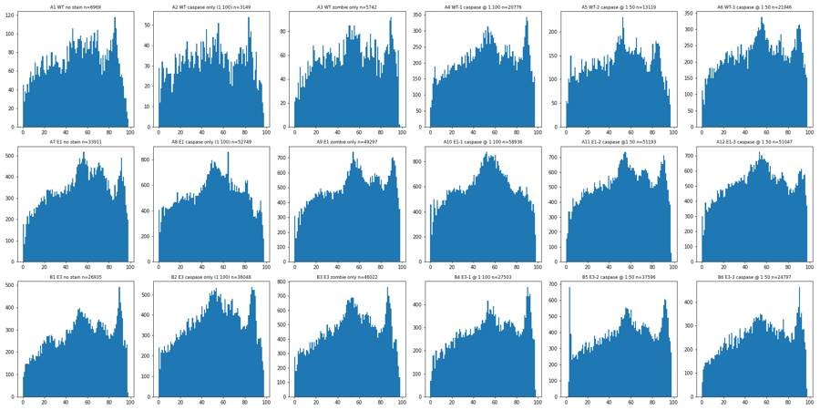
18
tool call · Read
{
"file_path": "/task/work/p_rl3_bl1.png"
}19
tool output
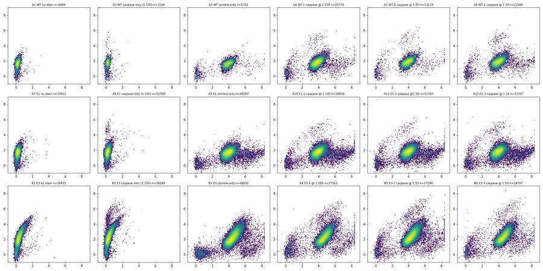
20
tool call · Read
{
"file_path": "/task/work/p_fsc_rl3.png"
}21
tool output
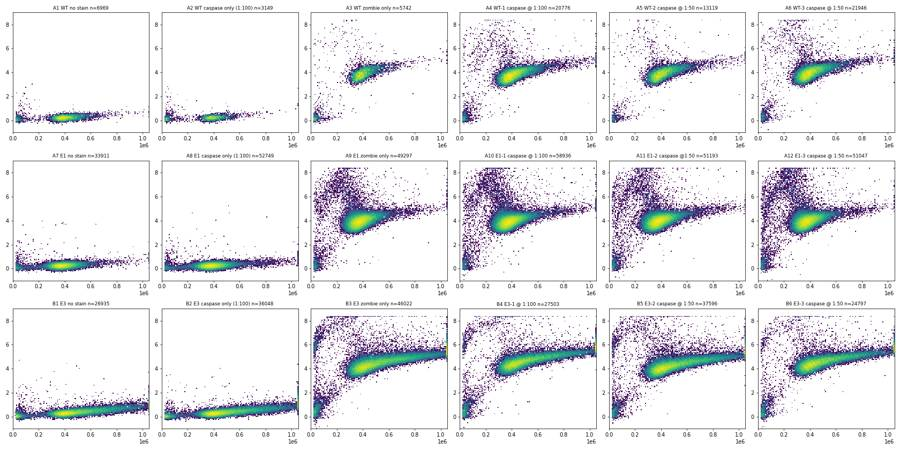
22
tool call · Read
{
"file_path": "/task/work/p_fsca_fsch.png"
}23
tool output
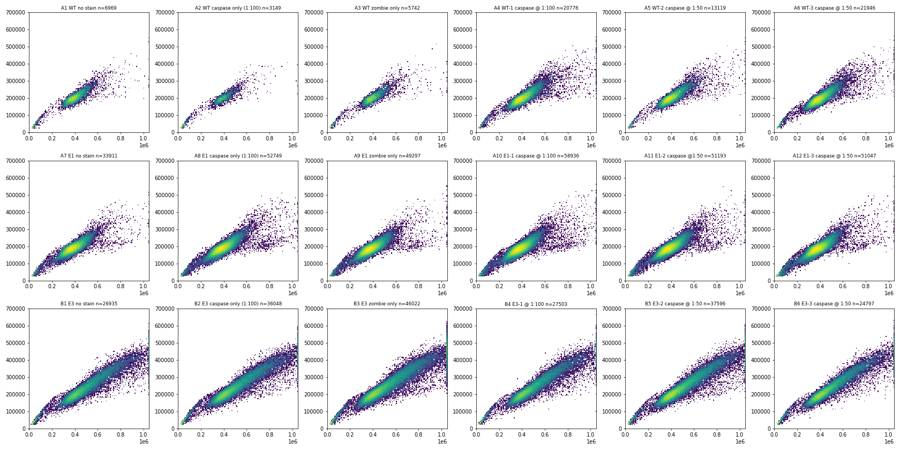
25
tool call · Read
{
"file_path": "/task/work/p_fsc_bl1.png"
}26
tool output
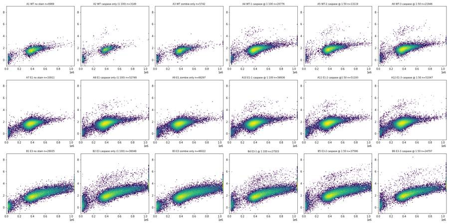
28
thinking
I've read the plan and all 18 files (BL1 is cleaved caspase-3 AF488, RL3 is Zombie NIR, and the "AAV-GFP" label is stale). Next I'll set the gate boundaries from the controls and then build the FlowKit strategy.
29
tool call · Bash
cat > explore2.py <<'EOF'
import numpy as np, pandas as pd, matplotlib
matplotlib.use('Agg'); import matplotlib.pyplot as plt
D=pd.read_pickle('D.pkl'); lay=pd.read_csv('/task/inputs/plate_layout.csv')
def asinh(x,c): return np.arcsinh(x/c)
# rough cells + singlets
fig,axs=plt.subplots(3,6,figsize=(24,12))
fig2,axs2=plt.subplots(3,6,figsize=(24,12))
fig3,axs3=plt.subplots(3,6,figsize=(24,12))
for ax,ax2,ax3,(_,r) in zip(axs.flat,axs2.flat,axs3.flat,lay.iterrows()):
d=D[r.well]
c=d[(d['FSC-A']>200e3)&(d['FSC-A']<1.04e6)&(d['SSC-A']>80e3)&(d['SSC-A']<1.04e6)]
ratio=c['FSC-A']/c['FSC-H']
ax.hist(ratio,bins=200,range=(1.5,4)); ax.set_yscale('log'); ax.set_title(f"{r.well} {r['sample']} A/H med={ratio.median():.2f}",fontsize=9)
ax2.hist(asinh(c['RL3-A'],500),bins=200,range=(-1,9)); ax2.set_yscale('log'); ax2.set_title(f"{r.well} {r['sample']}",fontsize=9)
ax2.axvline(6,color='r')
ax3.hist2d(c['SSC-A'],asinh(c['BL1-A'],100),bins=150,range=[[0,1.05e6],[-1,9]],norm=matplotlib.colors.LogNorm()); ax3.set_title(f"{r.well} {r['sample']}",fontsize=9)
print(r.well, len(d), len(c), 'debris%', 100*(d['FSC-A']<200e3).mean().round(3), 'sat%', 100*((d['FSC-A']>=1.04e6)|(d['SSC-A']>=1.04e6)).mean().round(4))
fig.tight_layout(); fig.savefig('p_ratio.png',dpi=70)
fig2.tight_layout(); fig2.savefig('p_rl3hist.png',dpi=70)
fig3.tight_layout(); fig3.savefig('p_ssc_bl1.png',dpi=70)
# B5 burst
d=D['B5']; print(np.histogram(d['Time'],bins=10,range=(0,5))[0])
for w in ['B5','B4']:
d=D[w]; e=d[d['Time']<3.5]; print(w,len(e), (e['FSC-A']<200e3).mean(), (d['FSC-A']<200e3).mean())
EOF
python3 -I explore2.py30
tool call · Read
{
"file_path": "/task/work/p_rl3hist.png"
}31
tool call · Read
{
"file_path": "/task/work/p_ratio.png"
}32
tool output
A1 6969 6371 debris% 8.3 sat% 0.32 A2 3149 2538 debris% 19.0 sat% 0.38 A3 5742 5163 debris% 9.8 sat% 0.33 A4 20776 19702 debris% 4.6 sat% 0.48 A5 13119 12592 debris% 3.6999999999999997 sat% 0.24 A6 21946 21031 debris% 3.9 sat% 0.29 A7 33911 32485 debris% 4.0 sat% 0.13 A8 52749 50991 debris% 3.1 sat% 0.15 A9 49297 47389 debris% 3.6999999999999997 sat% 0.13 A10 58936 56795 debris% 3.4000000000000004 sat% 0.16999999999999998 A11 51193 49018 debris% 4.1000000000000005 sat% 0.16 A12 51047 48423 debris% 5.0 sat% 0.13999999999999999 B1 26935 23369 debris% 8.5 sat% 4.5600000000000005 B2 36048 31698 debris% 7.7 sat% 4.18 B3 46022 40613 debris% 6.5 sat% 5.13 B4 27503 24207 debris% 7.1 sat% 4.81 B5 37596 33871 debris% 4.8 sat% 5.029999999999999 B6 24797 22190 debris% 6.4 sat% 4.09 [ 1 0 2 2 0 94 362 321 222 170] B5 461 0.04121475054229935 0.047824236620917115 B4 467 0.09635974304068523 0.07075591753626877
33
tool output
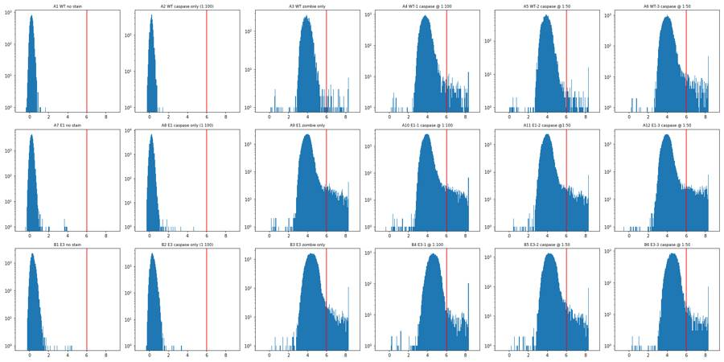
34
tool output
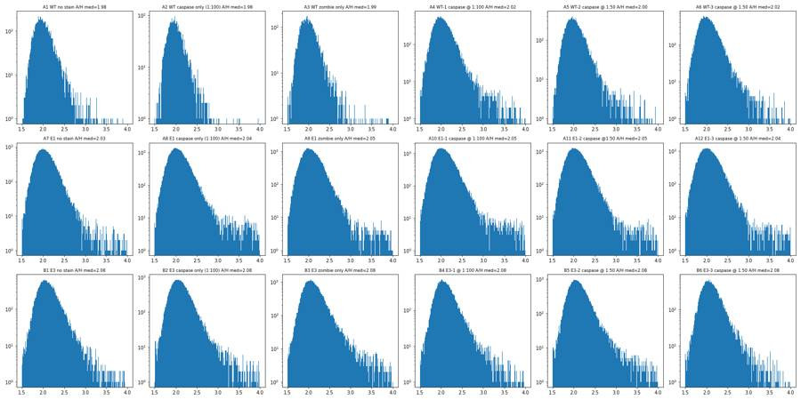
36
tool call · Read
{
"file_path": "/task/work/p_ssc_bl1.png"
}37
tool output
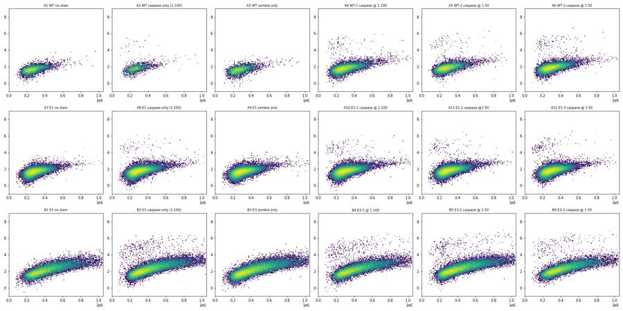
39
tool call · Bash
cat > explore3.py <<'EOF'
import numpy as np, pandas as pd, flowkit as fk
D=pd.read_pickle('D.pkl'); lay=pd.read_csv('/task/inputs/plate_layout.csv')
lg=fk.transforms.LogicleTransform(param_t=1048576,param_w=0.5,param_m=4.5,param_a=0)
L=lambda x: lg.apply(np.asarray(x,dtype=float))
print('logicle of', [(v, round(float(L([v])[0]),3)) for v in [0,100,300,1000,2000,3000,5000,10000,30000,60000,100000,200000,1e6]])
def pre(d):
c=d[(d['FSC-A']>200e3)&(d['FSC-A']<1.04e6)&(d['SSC-A']>80e3)&(d['SSC-A']<1.04e6)]
r=c['FSC-A']/c['FSC-H']
return c[(r<2.6)&(r>1.45)]
bins=np.arange(100e3,1.05e6,100e3)
print('--- BL1 logicle upper percentiles by SSC bin (singlets, RL3<100k)')
for w in lay.well:
c=pre(D[w]); c=c[c['RL3-A']<100e3]
out=[]
for lo in bins:
b=c[(c['SSC-A']>=lo)&(c['SSC-A']<lo+100e3)]
if len(b)<50: out.append(' - '); continue
x=L(b['BL1-A']); out.append(f"{np.median(x):.2f}/{np.percentile(x,99):.2f}/{np.percentile(x,99.9):.2f}")
print(w.ljust(4),' '.join(out))
print('--- RL3 logicle by FSC bin: median / 97.5 / 99.5')
bins=np.arange(200e3,1.05e6,100e3)
for w in ['A3','A4','A5','A6','A9','A10','A11','A12','B3','B4','B5','B6']:
c=pre(D[w]); out=[]
for lo in bins:
b=c[(c['FSC-A']>=lo)&(c['FSC-A']<lo+100e3)]
if len(b)<50: out.append(' - '); continue
x=L(b['RL3-A']); m=np.median(x); mad=1.4826*np.median(np.abs(x-m))
out.append(f"{m:.2f}/{m+4*mad:.2f}/{np.percentile(x,99):.2f}")
print(w.ljust(4),' '.join(out))
EOF
python3 -I explore3.py40
tool output
logicle of [(0, 0.111), (100, 0.139), (300, 0.191), (1000, 0.305), (2000, 0.381), (3000, 0.424), (5000, 0.477), (10000, 0.547), (30000, 0.656), (60000, 0.723), (100000, 0.773), (200000, 0.84), (1000000.0, 0.995)] --- BL1 logicle upper percentiles by SSC bin (singlets, RL3<100k) A1 0.16/0.21/0.23 0.18/0.24/0.28 0.19/0.26/0.28 0.21/0.30/0.35 0.22/0.33/0.38 - - - - - A2 0.17/0.48/0.55 0.18/0.25/0.51 0.20/0.27/0.45 0.22/0.32/0.56 - - - - - - A3 0.16/0.21/0.22 0.17/0.24/0.26 0.19/0.25/0.32 0.20/0.29/0.34 0.22/0.32/0.32 - - - - - A4 0.17/0.40/0.52 0.18/0.26/0.52 0.20/0.27/0.47 0.21/0.30/0.48 0.23/0.33/0.53 0.26/0.48/0.60 0.28/0.50/0.59 - - - A5 0.18/0.33/0.52 0.19/0.27/0.56 0.20/0.29/0.54 0.22/0.36/0.59 0.24/0.35/0.50 0.26/0.62/0.65 - - - - A6 0.18/0.49/0.54 0.19/0.26/0.53 0.20/0.29/0.53 0.22/0.34/0.58 0.24/0.48/0.57 0.27/0.47/0.58 - - - - A7 0.16/0.22/0.25 0.17/0.24/0.29 0.19/0.27/0.33 0.20/0.29/0.35 0.22/0.32/0.36 0.24/0.38/0.42 - - - - A8 0.16/0.28/0.52 0.18/0.24/0.36 0.19/0.26/0.32 0.21/0.30/0.50 0.22/0.34/0.53 0.25/0.46/0.53 0.26/0.37/0.38 - - - A9 0.16/0.22/0.25 0.17/0.23/0.27 0.19/0.26/0.31 0.20/0.29/0.35 0.22/0.33/0.42 0.25/0.36/0.36 - - - - A10 0.16/0.40/0.52 0.18/0.24/0.38 0.19/0.27/0.33 0.21/0.29/0.40 0.22/0.34/0.49 0.26/0.39/0.54 0.27/0.43/0.44 - - - A11 0.17/0.46/0.55 0.18/0.25/0.44 0.20/0.27/0.33 0.21/0.29/0.50 0.23/0.33/0.57 0.26/0.47/0.59 0.27/0.32/0.32 - - - A12 0.17/0.47/0.54 0.18/0.25/0.48 0.20/0.27/0.37 0.21/0.31/0.38 0.23/0.35/0.64 0.26/0.49/0.56 - - - - B1 0.17/0.22/0.24 0.18/0.25/0.31 0.20/0.29/0.33 0.23/0.33/0.37 0.26/0.36/0.40 0.28/0.39/0.46 0.30/0.41/0.46 0.31/0.44/0.46 0.32/0.45/0.48 0.35/0.44/0.45 B2 0.17/0.52/0.56 0.18/0.41/0.55 0.21/0.36/0.57 0.24/0.38/0.59 0.27/0.39/0.58 0.29/0.42/0.60 0.31/0.44/0.59 0.32/0.44/0.64 0.34/0.52/0.64 0.34/0.57/0.59 B3 0.16/0.22/0.26 0.17/0.24/0.29 0.20/0.29/0.34 0.23/0.33/0.39 0.26/0.37/0.40 0.28/0.40/0.44 0.30/0.42/0.46 0.32/0.45/0.47 0.32/0.44/0.50 0.34/0.46/0.47 B4 0.17/0.52/0.54 0.18/0.43/0.56 0.21/0.35/0.54 0.24/0.38/0.58 0.26/0.44/0.60 0.29/0.42/0.58 0.30/0.43/0.54 0.32/0.44/0.64 0.33/0.53/0.61 0.35/0.64/0.67 B5 0.17/0.52/0.57 0.19/0.40/0.57 0.21/0.31/0.55 0.24/0.36/0.60 0.27/0.38/0.53 0.30/0.42/0.60 0.32/0.44/0.63 0.33/0.45/0.65 0.34/0.55/0.65 0.35/0.58/0.62 B6 0.17/0.56/0.59 0.19/0.30/0.56 0.21/0.31/0.58 0.24/0.36/0.61 0.27/0.39/0.59 0.29/0.40/0.62 0.31/0.46/0.62 0.33/0.45/0.57 0.34/0.47/0.69 0.36/0.44/0.44 --- RL3 logicle by FSC bin: median / 97.5 / 99.5 A3 0.56/0.84/1.00 0.55/0.68/0.73 0.58/0.71/0.67 0.61/0.73/0.67 0.63/0.75/0.73 - - - - A4 0.53/0.76/0.98 0.54/0.67/0.74 0.57/0.69/0.66 0.60/0.70/0.69 0.62/0.72/0.68 0.64/0.75/0.77 0.66/0.76/0.78 - - A5 0.53/0.76/1.00 0.55/0.68/0.72 0.58/0.70/0.66 0.61/0.71/0.68 0.63/0.72/0.69 0.65/0.75/0.75 - - - A6 0.55/0.77/1.00 0.56/0.70/0.79 0.59/0.71/0.69 0.62/0.72/0.74 0.64/0.74/0.72 0.66/0.76/0.75 0.68/0.77/0.75 - - A9 0.56/0.77/0.99 0.56/0.71/0.76 0.59/0.71/0.69 0.62/0.72/0.75 0.64/0.74/0.78 0.66/0.77/0.72 - - - A10 0.56/0.77/0.99 0.56/0.70/0.75 0.59/0.70/0.68 0.61/0.70/0.72 0.64/0.73/0.79 0.66/0.74/0.75 0.67/0.76/0.80 - - A11 0.56/0.78/1.00 0.56/0.71/0.75 0.59/0.71/0.67 0.62/0.71/0.71 0.64/0.73/0.76 0.67/0.76/0.73 - - - A12 0.57/0.82/1.00 0.56/0.71/0.77 0.59/0.71/0.68 0.62/0.71/0.71 0.64/0.75/0.83 0.66/0.75/0.72 - - - B3 0.58/0.84/1.00 0.58/0.71/0.85 0.60/0.72/0.74 0.63/0.74/0.76 0.65/0.74/0.78 0.67/0.75/0.78 0.68/0.76/0.81 0.69/0.76/0.80 0.69/0.75/0.76 B4 0.61/0.90/1.00 0.60/0.73/0.94 0.62/0.74/0.75 0.65/0.75/0.76 0.67/0.76/0.78 0.69/0.77/0.78 0.70/0.77/0.79 0.71/0.78/0.79 0.71/0.78/0.82 B5 0.57/0.85/1.00 0.57/0.70/0.84 0.59/0.71/0.76 0.62/0.72/0.75 0.64/0.73/0.78 0.65/0.73/0.77 0.66/0.74/0.79 0.67/0.75/0.78 0.68/0.73/0.80 B6 0.59/0.83/1.00 0.60/0.74/0.91 0.62/0.74/0.78 0.65/0.75/0.77 0.67/0.75/0.76 0.68/0.76/0.77 0.70/0.77/0.80 0.71/0.77/0.80 0.72/0.78/0.82
42
tool call · Bash
cat > explore4.py <<'EOF'
import numpy as np, pandas as pd, flowkit as fk, matplotlib
matplotlib.use('Agg'); import matplotlib.pyplot as plt
D=pd.read_pickle('D.pkl'); lay=pd.read_csv('/task/inputs/plate_layout.csv')
lg=fk.transforms.LogicleTransform(param_t=1048576,param_w=0.5,param_m=4.5,param_a=0)
L=lambda x: lg.apply(np.asarray(x,dtype=float))
bx=np.array([80e3,300e3,600e3,1.05e6]); by=np.array([0.36,0.40,0.475,0.55])
lx=np.array([150e3,1.05e6]); ly=np.array([0.715,0.80])
fig,axs=plt.subplots(3,6,figsize=(24,12)); fig2,axs2=plt.subplots(3,6,figsize=(24,12)); fig3,axs3=plt.subplots(3,6,figsize=(24,12))
print('min logicle RL3/BL1', min(L(D[w]['RL3-A']).min() for w in D), min(L(D[w]['BL1-A']).min() for w in D), 'min raw', min(D[w]['RL3-A'].min() for w in D), min(D[w]['BL1-A'].min() for w in D))
for ax,ax2,ax3,(_,r) in zip(axs.flat,axs2.flat,axs3.flat,lay.iterrows()):
d=D[r.well].copy(); d['b']=L(d['BL1-A']); d['z']=L(d['RL3-A'])
hi=(d['b']>np.interp(d['SSC-A'],bx,by))
cells=(d['FSC-A']>200e3)&(d['FSC-A']<1.04e6)&(d['SSC-A']>80e3)&(d['SSC-A']<1.04e6)
rr=d['FSC-A']/d['FSC-H']; sing=cells&(rr<2.6)&(rr>1.45)
live=sing&(d['z']<np.interp(d['FSC-A'],lx,ly))
print(r.well.ljust(4), f"all={len(d)} hi_all={hi.sum()} hi_lowFSC={(hi&(d['FSC-A']<200e3)).sum()} hi_sat={(hi&((d['FSC-A']>=1.04e6)|(d['SSC-A']>=1.04e6))).sum()} hi_cells={(hi&cells).sum()} hi_doublet={(hi&cells&~sing).sum()} hi_sing={(hi&sing).sum()} hi_dead={(hi&sing&~live).sum()} hi_live={(hi&live).sum()} live={live.sum()} pct={100*(hi&live).sum()/live.sum():.3f} dead%={100*(sing&~live).sum()/sing.sum():.2f} hi%dead={100*(hi&sing&~live).sum()/max(1,(sing&~live).sum()):.2f}")
c=d[live]
ax.hist2d(c['SSC-A'],c['b'],bins=150,range=[[0,1.05e6],[0,0.8]],norm=matplotlib.colors.LogNorm()); ax.plot(bx,by,'r-'); ax.set_title(f"{r.well} {r['sample']}",fontsize=9)
s=d[sing]
ax2.hist2d(s['FSC-A'],s['z'],bins=150,range=[[0,1.05e6],[0,1.05]],norm=matplotlib.colors.LogNorm()); ax2.plot(lx,ly,'r-'); ax2.set_title(f"{r.well} {r['sample']}",fontsize=9)
# residual above boundary for SSC<400k
res=c['b']-np.interp(c['SSC-A'],bx,by)
ax3.hist(res,bins=120,range=(-0.4,0.4)); ax3.set_yscale('log'); ax3.axvline(0,color='r'); ax3.set_title(f"{r.well} {r['sample']}",fontsize=9)
for f,n in [(fig,'p_gate_casp.png'),(fig2,'p_gate_live.png'),(fig3,'p_resid.png')]:
f.tight_layout(); f.savefig(n,dpi=70)
EOF
python3 -I explore4.py43
tool call · Read
{
"file_path": "/task/work/p_gate_casp.png"
}44
tool call · Read
{
"file_path": "/task/work/p_resid.png"
}45
tool call · Read
{
"file_path": "/task/work/p_gate_live.png"
}46
tool output
min logicle RL3/BL1 -0.3509322202643297 -0.045071191363241225 min raw -12954.0 -702.0 A1 all=6969 hi_all=0 hi_lowFSC=0 hi_sat=0 hi_cells=0 hi_doublet=0 hi_sing=0 hi_dead=0 hi_live=0 live=6242 pct=0.000 dead%=0.00 hi%dead=0.00 A2 all=3149 hi_all=22 hi_lowFSC=1 hi_sat=0 hi_cells=19 hi_doublet=1 hi_sing=18 hi_dead=0 hi_live=18 live=2486 pct=0.724 dead%=0.00 hi%dead=0.00 A3 all=5742 hi_all=0 hi_lowFSC=0 hi_sat=0 hi_cells=0 hi_doublet=0 hi_sing=0 hi_dead=0 hi_live=0 live=5008 pct=0.000 dead%=1.18 hi%dead=0.00 A4 all=20776 hi_all=86 hi_lowFSC=4 hi_sat=1 hi_cells=79 hi_doublet=2 hi_sing=77 hi_dead=0 hi_live=77 live=18919 pct=0.407 dead%=1.16 hi%dead=0.00 A5 all=13119 hi_all=75 hi_lowFSC=1 hi_sat=0 hi_cells=71 hi_doublet=2 hi_sing=69 hi_dead=0 hi_live=69 live=12185 pct=0.566 dead%=0.84 hi%dead=0.00 A6 all=21946 hi_all=125 hi_lowFSC=5 hi_sat=0 hi_cells=119 hi_doublet=8 hi_sing=111 hi_dead=1 hi_live=110 live=20173 pct=0.545 dead%=1.67 hi%dead=0.29 A7 all=33911 hi_all=0 hi_lowFSC=0 hi_sat=0 hi_cells=0 hi_doublet=0 hi_sing=0 hi_dead=0 hi_live=0 live=31780 pct=0.000 dead%=0.00 hi%dead=0.00 A8 all=52749 hi_all=91 hi_lowFSC=2 hi_sat=2 hi_cells=80 hi_doublet=11 hi_sing=69 hi_dead=0 hi_live=69 live=49522 pct=0.139 dead%=0.00 hi%dead=0.00 A9 all=49297 hi_all=1 hi_lowFSC=0 hi_sat=1 hi_cells=0 hi_doublet=0 hi_sing=0 hi_dead=0 hi_live=0 live=45140 pct=0.000 dead%=2.08 hi%dead=0.00 A10 all=58936 hi_all=113 hi_lowFSC=4 hi_sat=3 hi_cells=99 hi_doublet=13 hi_sing=86 hi_dead=1 hi_live=85 live=53964 pct=0.158 dead%=2.03 hi%dead=0.09 A11 all=51193 hi_all=112 hi_lowFSC=9 hi_sat=3 hi_cells=93 hi_doublet=7 hi_sing=86 hi_dead=0 hi_live=86 live=46676 pct=0.184 dead%=2.02 hi%dead=0.00 A12 all=51047 hi_all=165 hi_lowFSC=15 hi_sat=1 hi_cells=144 hi_doublet=15 hi_sing=129 hi_dead=1 hi_live=128 live=45929 pct=0.279 dead%=2.58 hi%dead=0.08 B1 all=26935 hi_all=3 hi_lowFSC=0 hi_sat=3 hi_cells=0 hi_doublet=0 hi_sing=0 hi_dead=0 hi_live=0 live=22510 pct=0.000 dead%=0.00 hi%dead=0.00 B2 all=36048 hi_all=481 hi_lowFSC=12 hi_sat=88 hi_cells=365 hi_doublet=57 hi_sing=308 hi_dead=0 hi_live=308 live=30581 pct=1.007 dead%=0.00 hi%dead=0.00 B3 all=46022 hi_all=10 hi_lowFSC=0 hi_sat=8 hi_cells=2 hi_doublet=0 hi_sing=2 hi_dead=0 hi_live=2 live=38370 pct=0.005 dead%=1.72 hi%dead=0.00 B4 all=27503 hi_all=394 hi_lowFSC=7 hi_sat=76 hi_cells=301 hi_doublet=46 hi_sing=255 hi_dead=5 hi_live=250 live=22851 pct=1.094 dead%=1.98 hi%dead=1.08 B5 all=37596 hi_all=387 hi_lowFSC=10 hi_sat=84 hi_cells=269 hi_doublet=40 hi_sing=229 hi_dead=2 hi_live=227 live=32042 pct=0.708 dead%=1.88 hi%dead=0.33 B6 all=24797 hi_all=272 hi_lowFSC=10 hi_sat=60 hi_cells=195 hi_doublet=30 hi_sing=165 hi_dead=0 hi_live=165 live=20983 pct=0.786 dead%=2.14 hi%dead=0.00
47
tool output
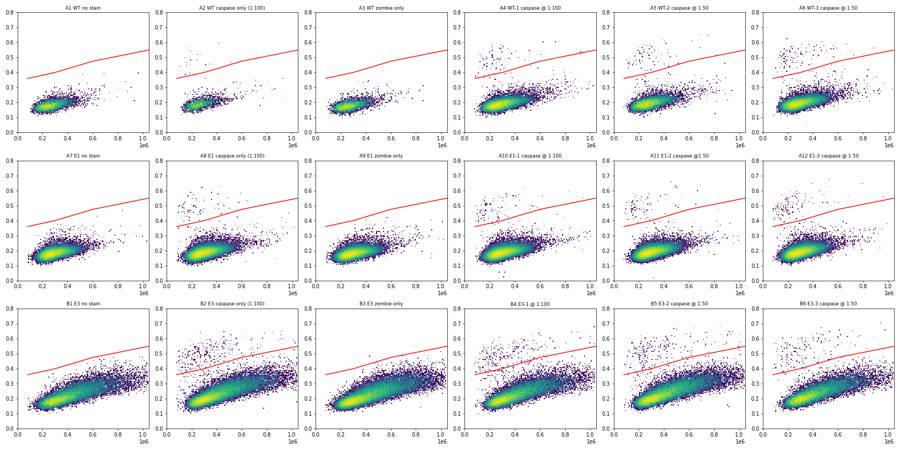
48
tool output
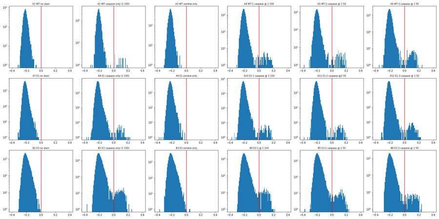
49
tool output
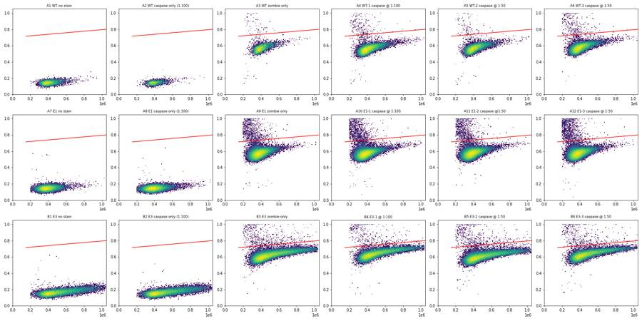
51
thinking
Gate boundaries are set, with caspase-3+ cells showing as a distinct population absent from the no-antibody controls. Next I'm running a time-stability QC, then building the FlowKit strategy and outputs.
52
tool call · Bash
cat > timeqc.py <<'EOF'
import numpy as np, pandas as pd
D=pd.read_pickle('D.pkl'); lay=pd.read_csv('/task/inputs/plate_layout.csv')
for w in lay.well:
d=D[w]; t=d['Time'].values
h=np.histogram(t,bins=np.arange(0,100,2))[0]
gaps=np.diff(np.sort(t)).max()
# 10 time deciles: median FSC, BL1, RL3 and debris frac
q=pd.cut(d['Time'],bins=np.linspace(0,98.1,8))
g=d.groupby(q)
print(w.ljust(4), f"n={len(d)} maxgap={gaps:.2f}s rate2s min/med/max={h[1:48].min()}/{int(np.median(h[1:48]))}/{h[1:48].max()} first2s={h[0]} last(96-98)={h[48]}",
'FSCmed', (g['FSC-A'].median()/1e3).round(0).astype(int).tolist(), 'BL1med', g['BL1-A'].median().round(0).astype(int).tolist(), 'RL3med',g['RL3-A'].median().round(0).astype(int).tolist(),
'debris%', (100*g['FSC-A'].apply(lambda x:(x<200e3).mean())).round(1).tolist())
EOF
python3 -I timeqc.py53
tool output
/task/work/timeqc.py:9: FutureWarning: The default of observed=False is deprecated and will be changed to True in a future version of pandas. Pass observed=False to retain current behavior or observed=True to adopt the future default and silence this warning. g=d.groupby(q) /task/work/timeqc.py:9: FutureWarning: The default of observed=False is deprecated and will be changed to True in a future version of pandas. Pass observed=False to retain current behavior or observed=True to adopt the future default and silence this warning. g=d.groupby(q) /task/work/timeqc.py:9: FutureWarning: The default of observed=False is deprecated and will be changed to True in a future version of pandas. Pass observed=False to retain current behavior or observed=True to adopt the future default and silence this warning. g=d.groupby(q) /task/work/timeqc.py:9: FutureWarning: The default of observed=False is deprecated and will be changed to True in a future version of pandas. Pass observed=False to retain current behavior or observed=True to adopt the future default and silence this warning. g=d.groupby(q) /task/work/timeqc.py:9: FutureWarning: The default of observed=False is deprecated and will be changed to True in a future version of pandas. Pass observed=False to retain current behavior or observed=True to adopt the future default and silence this warning. g=d.groupby(q) /task/work/timeqc.py:9: FutureWarning: The default of observed=False is deprecated and will be changed to True in a future version of pandas. Pass observed=False to retain current behavior or observed=True to adopt the future default and silence this warning. g=d.groupby(q) /task/work/timeqc.py:9: FutureWarning: The default of observed=False is deprecated and will be changed to True in a future version of pandas. Pass observed=False to retain current behavior or observed=True to adopt the future default and silence this warning. g=d.groupby(q) /task/work/timeqc.py:9: FutureWarning: The default of observed=False is deprecated and will be changed to True in a future version of pandas. Pass observed=False to retain current behavior or observed=True to adopt the future default and silence this warning. g=d.groupby(q) /task/work/timeqc.py:9: FutureWarning: The default of observed=False is deprecated and will be changed to True in a future version of pandas. Pass observed=False to retain current behavior or observed=True to adopt the future default and silence this warning. g=d.groupby(q) /task/work/timeqc.py:9: FutureWarning: The default of observed=False is deprecated and will be changed to True in a future version of pandas. Pass observed=False to retain current behavior or observed=True to adopt the future default and silence this warning. g=d.groupby(q) /task/work/timeqc.py:9: FutureWarning: The default of observed=False is deprecated and will be changed to True in a future version of pandas. Pass observed=False to retain current behavior or observed=True to adopt the future default and silence this warning. g=d.groupby(q) /task/work/timeqc.py:9: FutureWarning: The default of observed=False is deprecated and will be changed to True in a future version of pandas. Pass observed=False to retain current behavior or observed=True to adopt the future default and silence this warning. g=d.groupby(q) /task/work/timeqc.py:9: FutureWarning: The default of observed=False is deprecated and will be changed to True in a future version of pandas. Pass observed=False to retain current behavior or observed=True to adopt the future default and silence this warning. g=d.groupby(q) /task/work/timeqc.py:9: FutureWarning: The default of observed=False is deprecated and will be changed to True in a future version of pandas. Pass observed=False to retain current behavior or observed=True to adopt the future default and silence this warning. g=d.groupby(q) /task/work/timeqc.py:9: FutureWarning: The default of observed=False is deprecated and will be changed to True in a future version of pandas. Pass observed=False to retain current behavior or observed=True to adopt the future default and silence this warning. g=d.groupby(q) /task/work/timeqc.py:9: FutureWarning: The default of observed=False is deprecated and will be changed to True in a future version of pandas. Pass observed=False to retain current behavior or observed=True to adopt the future default and silence this warning. g=d.groupby(q) /task/work/timeqc.py:9: FutureWarning: The default of observed=False is deprecated and will be changed to True in a future version of pandas. Pass observed=False to retain current behavior or observed=True to adopt the future default and silence this warning. g=d.groupby(q) /task/work/timeqc.py:9: FutureWarning: The default of observed=False is deprecated and will be changed to True in a future version of pandas. Pass observed=False to retain current behavior or observed=True to adopt the future default and silence this warning. g=d.groupby(q) A1 n=6969 maxgap=0.26s rate2s min/med/max=62/147/219 first2s=72 last(96-98)=25 FSCmed [400, 397, 390, 393, 396, 398, 404] BL1med [243, 245, 236, 248, 244, 245, 250] RL3med [108, 113, 106, 112, 112, 109, 122] debris% [9.2, 7.9, 10.6, 7.6, 7.9, 6.7, 9.0] A2 n=3149 maxgap=0.39s rate2s min/med/max=38/66/97 first2s=41 last(96-98)=19 FSCmed [388, 372, 380, 374, 375, 387, 396] BL1med [256, 261, 269, 261, 274, 263, 282] RL3med [113, 107, 104, 116, 106, 114, 129] debris% [17.7, 21.6, 21.2, 17.1, 18.7, 17.1, 19.5] A3 n=5742 maxgap=0.27s rate2s min/med/max=61/117/181 first2s=46 last(96-98)=66 FSCmed [389, 392, 385, 386, 391, 392, 403] BL1med [227, 232, 228, 239, 245, 235, 232] RL3med [11614, 12096, 11792, 12072, 12114, 12064, 12586] debris% [10.5, 9.9, 12.1, 10.1, 7.9, 11.2, 7.1] A4 n=20776 maxgap=0.06s rate2s min/med/max=267/428/659 first2s=143 last(96-98)=156 FSCmed [397, 400, 401, 393, 401, 398, 409] BL1med [278, 286, 288, 285, 289, 288, 291] RL3med [11027, 11065, 11274, 11110, 11326, 11271, 11469] … [3,811 more characters not shown]
55
tool call · Skill
{
"skill": "dataviz"
}56
tool output
Launching skill: dataviz
57
tool call · Bash
python3 -I -c "
import flowkit as fk, inspect
print(inspect.signature(fk.Dimension.__init__))
print(inspect.signature(fk.gates.PolygonGate.__init__))
print(inspect.signature(fk.gates.RectangleGate.__init__))
print(inspect.signature(fk.GatingStrategy.add_gate))
print(inspect.signature(fk.GatingStrategy.add_transform))
print(inspect.signature(fk.GatingStrategy.gate_sample))
print(inspect.signature(fk.export_gatingml))
print(inspect.signature(fk.transforms.LogicleTransform.__init__))
r=fk.GatingStrategy; print([m for m in dir(r) if not m.startswith('_')])
"58
tool output
(self, dimension_id, compensation_ref='uncompensated', transformation_ref=None, range_min=None, range_max=None) (self, gate_name, dimensions, vertices, use_complement=False) (self, gate_name, dimensions, use_complement=False) (self, gate, gate_path, sample_id=None) (self, transform_id, transform) (self, sample, cache_events=False, verbose=False) (gating_strategy, file_handle, sample_id=None) (self, param_t, param_w, param_m, param_a) ['add_comp_matrix', 'add_gate', 'add_transform', 'clear_cache', 'export_gate_hierarchy_image', 'find_matching_gate_paths', 'gate_sample', 'get_child_gate_ids', 'get_comp_matrix', 'get_gate', 'get_gate_hierarchy', 'get_gate_ids', 'get_max_depth', 'get_parent_gate_id', 'get_root_gates', 'get_transform', 'is_custom_gate', 'remove_gate', 'rename_gate', 'resolver']
60
tool call · Bash
cd /tmp/claude-0/bundled-skills/2.1.322/974a6ec1a88da4461c75f992974a8422/dataviz && sed -n 1,80p references/palette.md | cut -c1-220
61
tool output
# Reference palette
This is the **reference instance** of the data-viz method: every parameter the
method needs, filled in with a validated default palette. The rest of the skill
is system-agnostic - **to target your brand, substitute this file's values** and
re-run the validator. Nothing else changes.
## How to use these values
Everything below is plain hex. In an HTML chart, **define the slots you use as
CSS custom properties in a local `<style>` block** at the top of the file, then
reference them by role throughout - so the light/dark values swap in one place,
and the chart body is written against roles rather than raw hex:
```css
.viz-root {
color-scheme: light;
--surface-1: #fcfcfb; /* chart surface */
--text-primary: #0b0b0b;
--text-secondary: #52514e;
--series-1: #2a78d6; /* categorical slot 1 */
/* ...only the roles this chart uses */
}
@media (prefers-color-scheme: dark) {
:root:where(:not([data-theme="light"])) .viz-root {
color-scheme: dark;
--surface-1: #1a1a19;
--text-primary: #f0efec;
--text-secondary: #c3c2b7;
--series-1: #3987e5;
}
}
:root[data-theme="dark"] .viz-root {
color-scheme: dark;
--surface-1: #1a1a19;
--text-primary: #f0efec;
--text-secondary: #c3c2b7;
--series-1: #3987e5;
}
```
Declare the dark values under both scopes as above - the media query covers
the OS setting; the `data-theme` scope covers the viewer's theme toggle,
which must win both ways (the `:not(...)` guard lets a light stamp beat
OS-dark; `:where()` keeps the media block below the toggle scope).
## Categorical palette
Both modes are selected. The dark column is the same eight hues stepped for the
dark surface, not a separate palette:
| Slot | Hue | Light | Dark |
|------|-----|-------|------|
| 1 | blue | `#2a78d6` | `#3987e5` |
| 2 | orange | `#eb6834` | `#d95926` |
| 3 | aqua | `#1baf7a` | `#199e70` |
| 4 | yellow | `#eda100` | `#c98500` |
| 5 | magenta | `#e87ba4` | `#d55181` |
| 6 | green | `#008300` | `#008300` |
| 7 | violet | `#6250d6` | `#9085e9` |
| 8 | red | `#e34948` | `#e66767` |
This order passes every hard gate in both modes on the default *adjacent*
pairlist (stacks, bars, lines): worst adjacent CVD Delta E 9.1 light / 8.4 dark
(OKLab ×100, >=8 target), worst adjacent normal-vision Delta E 19.6 light / 19.3
dark (>=15 floor). Under `--pairs all` (scatter, bubble, choropleth, small
multiples) the full eight cannot clear the floors - with all 28 pairs in
play no ordering can (the pairlist no longer depends on order), and
re-stepping is off the table by the documented-palette rule - so those
chart forms carry a series cap: **the first three slots validate all-pairs
in both modes** (worst pair CVD Delta E 9.2 light / 9.4 dark, normal-vision 24.0
light / 20.9 dark - clear of the CVD warn band). Past three, fold to "Other" or
facet: the fourth slot puts yellow and orange on screen
together, and that pair fails the all-pairs floors (normal-vision 13.7
light; CVD 4.8 dark). Three light-mode slots (magenta, yellow, aqua)
sit below 3:1 contrast on the light surface: the **relief rule** applies (ship
visible direct labels or the table view). The dark steps were chosen for the
dark band (OKLCH L ~ 0.48-0.67, >= 3:1 on the dark surface) and validated as a
set. (Ordering history: adopted July 2026 for its more harmonious opening -
the same eight hues and steps as its predecessor, re-ordered, zero hex
Shell cwd was reset to /task62
tool call · Bash
cd /task/work && cat > build_gates.py <<'EOF'
import flowkit as fk, numpy as np, pandas as pd, warnings
warnings.filterwarnings('ignore')
RAW='/task/inputs/raw/'; OUT='/task/outputs/'
lay=pd.read_csv('/task/inputs/plate_layout.csv')
U='uncompensated'
gs=fk.GatingStrategy()
gs.add_transform('logicle', fk.transforms.LogicleTransform(param_t=1048576,param_w=0.5,param_m=4.5,param_a=0))
dim=lambda ch,tr=None: fk.Dimension(ch,compensation_ref=U,transformation_ref=tr)
# 1 cells: on-scale, non-debris events (FSC-A x SSC-A, linear)
gs.add_gate(fk.gates.PolygonGate('cells',[dim('FSC-A'),dim('SSC-A')],
[(200e3,80e3),(1040e3,80e3),(1040e3,1040e3),(200e3,1040e3)]),gate_path=('root',))
# 2 singlets: FSC-A/FSC-H between 1.45 and 2.6
gs.add_gate(fk.gates.PolygonGate('singlets',[dim('FSC-A'),dim('FSC-H')],
[(150e3,150e3/1.45),(1100e3,1100e3/1.45),(1100e3,1100e3/2.6),(150e3,150e3/2.6)]),gate_path=('root','cells'))
# 3 live: Zombie NIR (RL3-A, logicle) below a size-dependent boundary
yl=lambda x: 0.715+(x-150e3)*(0.80-0.715)/900e3
gs.add_gate(fk.gates.PolygonGate('live',[dim('FSC-A'),dim('RL3-A','logicle')],
[(100e3,-1.0),(1100e3,-1.0),(1100e3,yl(1100e3)),(100e3,yl(100e3))]),gate_path=('root','cells','singlets'))
# other: Zombie-high dead cells (complementary region above the live boundary)
gs.add_gate(fk.gates.PolygonGate('zombie_high_dead',[dim('FSC-A'),dim('RL3-A','logicle')],
[(100e3,yl(100e3)),(1100e3,yl(1100e3)),(1100e3,1.1),(100e3,1.1)]),gate_path=('root','cells','singlets'))
# 4 casp3_pos: cleaved caspase-3 AF488 (BL1-A, logicle) above SSC-dependent autofluorescence boundary
bx=[50e3,300e3,600e3,1100e3]; by=[0.36-(30e3)*(0.04/220e3),0.40,0.475,0.475+500e3*(0.075/450e3)]
gs.add_gate(fk.gates.PolygonGate('casp3_pos',[dim('SSC-A'),dim('BL1-A','logicle')],
list(zip(bx,by))+[(1100e3,1.1),(50e3,1.1)]),gate_path=('root','cells','singlets','live'))
with open(OUT+'gates.xml','wb') as f: fk.export_gatingml(gs,f)
gs2=fk.parse_gating_xml(OUT+'gates.xml')
print(gs2.get_gate_hierarchy('ascii'))
pops=[('cells','cells','all_events'),('singlets','singlets','cells'),('live','live','singlets'),
('casp3_pos','marker_positive','live'),('zombie_high_dead','other','singlets')]
rows=[]
for _,r in lay.iterrows():
s=fk.Sample(RAW+r.file)
res=gs2.gate_sample(s); res1=gs.gate_sample(s)
n={'all_events':s.event_count}
rows.append(dict(file=r.file,well=r.well,population='all_events',role='other',parent='none',count=s.event_count,pct_of_parent=''))
for p,role,par in pops:
c=int(res.get_gate_count(p)); assert c==int(res1.get_gate_count(p))
n[p]=c
rows.append(dict(file=r.file,well=r.well,population=p,role=role,parent=par,count=c,
pct_of_parent=('' if n[par]==0 else round(100*c/n[par],4))))
df=pd.DataFrame(rows)[['file','well','population','role','parent','count','pct_of_parent']]
df.to_csv(OUT+'counts.csv',index=False)
print(df.pivot(index='well',columns='population',values='count').loc[lay.well,['all_events','cells','singlets','live','zombie_high_dead','casp3_pos']])
EOF
python3 -I build_gates.py63
tool output
root
╰── cells
╰── singlets
├── live
│ ╰── casp3_pos
╰── zombie_high_dead
population all_events cells singlets live zombie_high_dead casp3_pos
well
A1 6969 6371 6242 6242 0 0
A2 3149 2538 2486 2486 0 18
A3 5742 5163 5068 5008 60 0
A4 20776 19702 19142 18919 223 77
A5 13119 12592 12288 12185 103 69
A6 21946 21031 20516 20173 343 110
A7 33911 32485 31780 31780 0 0
A8 52749 50991 49522 49522 0 69
A9 49297 47389 46099 45140 959 0
A10 58936 56795 55080 53964 1116 85
A11 51193 49018 47639 46676 963 86
A12 51047 48423 47143 45929 1214 128
B1 26935 23369 22510 22510 0 0
B2 36048 31698 30581 30581 0 308
B3 46022 40613 39040 38370 670 2
B4 27503 24207 23313 22851 462 250
B5 37596 33871 32655 32042 613 227
B6 24797 22190 21442 20983 459 16565
tool call · Bash
cat > analysis.py <<'EOF'
import flowkit as fk, numpy as np, pandas as pd, warnings
from scipy import stats
warnings.filterwarnings('ignore')
RAW='/task/inputs/raw/'; OUT='/task/outputs/'
lay=pd.read_csv('/task/inputs/plate_layout.csv')
U='uncompensated'
def build(shift=0.0, live_flat=None):
gs=fk.GatingStrategy()
gs.add_transform('logicle', fk.transforms.LogicleTransform(param_t=1048576,param_w=0.5,param_m=4.5,param_a=0))
dim=lambda ch,tr=None: fk.Dimension(ch,compensation_ref=U,transformation_ref=tr)
gs.add_gate(fk.gates.PolygonGate('cells',[dim('FSC-A'),dim('SSC-A')],[(200e3,80e3),(1040e3,80e3),(1040e3,1040e3),(200e3,1040e3)]),gate_path=('root',))
gs.add_gate(fk.gates.PolygonGate('singlets',[dim('FSC-A'),dim('FSC-H')],[(150e3,150e3/1.45),(1100e3,1100e3/1.45),(1100e3,1100e3/2.6),(150e3,150e3/2.6)]),gate_path=('root','cells'))
yl=(lambda x: live_flat) if live_flat else (lambda x: 0.715+(x-150e3)*(0.80-0.715)/900e3)
gs.add_gate(fk.gates.PolygonGate('live',[dim('FSC-A'),dim('RL3-A','logicle')],[(100e3,-1.0),(1100e3,-1.0),(1100e3,yl(1100e3)),(100e3,yl(100e3))]),gate_path=('root','cells','singlets'))
bx=[50e3,300e3,600e3,1100e3]; by=[0.36-(30e3)*(0.04/220e3),0.40,0.475,0.475+500e3*(0.075/450e3)]
by=[y+shift for y in by]
pts=list(zip(bx,by))+[(1100e3,1.1),(50e3,1.1)]
gs.add_gate(fk.gates.PolygonGate('casp3_pos',[dim('SSC-A'),dim('BL1-A','logicle')],pts),gate_path=('root','cells','singlets','live'))
gs.add_gate(fk.gates.PolygonGate('casp3_pos_allsing',[dim('SSC-A'),dim('BL1-A','logicle')],pts),gate_path=('root','cells','singlets'))
return gs
variants={'main':build(),'thr-0.03':build(-0.03),'thr+0.03':build(0.03),'thr+0.06':build(0.06),'liveflat0.773':build(live_flat=0.773)}
rows=[]
for _,r in lay.iterrows():
s=fk.Sample(RAW+r.file)
d=dict(well=r.well)
for k,gs in variants.items():
res=gs.gate_sample(s)
live=res.get_gate_count('live'); pos=res.get_gate_count('casp3_pos')
d[k]=100*pos/live
if k=='main':
d['live']=live; d['pos']=pos
d['allsing']=100*res.get_gate_count('casp3_pos_allsing')/res.get_gate_count('singlets')
ev=s.get_events(source='raw'); bl1=ev[:,s.pnn_labels.index('BL1-A')]
mpos=res.get_gate_membership('casp3_pos'); mlive=res.get_gate_membership('live')
neg=mlive&~mpos
d['negMFI']=np.median(bl1[neg]); d['posMFI']=np.median(bl1[mpos]) if mpos.sum()>=5 else np.nan
d['neg_rSD']=(np.percentile(bl1[neg],84.13)-np.percentile(bl1[neg],15.87))/2
lo,hi=stats.binomtest(int(pos),int(live)).proportion_ci(method='wilson'); d['ci_lo']=100*lo; d['ci_hi']=100*hi
# off-scale events
fsc=ev[:,s.pnn_labels.index('FSC-A')]; ssc=ev[:,s.pnn_labels.index('SSC-A')]
sat=(fsc>=1040e3)|(ssc>=1040e3); d['offscale_pct']=100*sat.mean(); d['offscale_n']=int(sat.sum())
d['sat_det']=int(((fsc>=1048575)|(ssc>=1048575)).sum())
rows.append(d)
df=pd.DataFrame(rows); pd.set_option('display.width',250)
print(df.round(3).to_string())
df.to_csv('well_stats.csv',index=False)
EOF
python3 -I analysis.py66
tool output
well main live pos allsing negMFI posMFI neg_rSD ci_lo ci_hi offscale_pct offscale_n sat_det thr-0.03 thr+0.03 thr+0.06 liveflat0.773 0 A1 0.000 6242 0 0.000 253.0 NaN 102.000 0.000 0.062 0.316 22 20 0.000 0.000 0.000 0.000 1 A2 0.724 2486 18 0.724 288.0 4914.5 104.744 0.458 1.142 0.381 12 12 0.724 0.603 0.523 0.724 2 A3 0.000 5008 0 0.000 244.0 NaN 96.000 0.000 0.077 0.331 19 19 0.000 0.000 0.000 0.000 3 A4 0.407 18919 77 0.402 288.0 5724.0 112.000 0.326 0.508 0.477 99 96 0.449 0.359 0.301 0.406 4 A5 0.566 12185 69 0.562 312.0 6893.0 118.500 0.448 0.716 0.244 32 31 0.599 0.509 0.460 0.565 5 A6 0.545 20173 110 0.541 320.0 6969.0 119.000 0.453 0.657 0.287 63 57 0.585 0.530 0.451 0.543 6 A7 0.000 31780 0 0.000 263.0 NaN 98.000 0.000 0.012 0.127 43 42 0.003 0.000 0.000 0.000 7 A8 0.139 49522 69 0.139 276.0 5235.0 103.500 0.110 0.176 0.150 79 73 0.149 0.129 0.105 0.139 8 A9 0.000 45140 0 0.000 256.0 NaN 96.000 0.000 0.009 0.130 64 62 0.004 0.000 0.000 0.000 9 A10 0.158 53964 85 0.156 278.0 5290.0 103.500 0.127 0.195 0.171 101 97 0.174 0.135 0.111 0.157 10 A11 0.184 46676 86 0.181 295.0 6185.0 109.500 0.149 0.227 0.156 80 78 0.199 0.171 0.150 0.183 11 A12 0.279 45929 128 0.274 292.0 5599.0 110.500 0.234 0.331 0.137 70 68 0.300 0.263 0.231 0.280 12 B1 0.000 22510 0 0.000 398.0 NaN 284.500 0.000 0.017 4.555 1227 1190 0.031 0.000 0.000 0.000 13 B2 1.007 30581 308 1.007 443.0 6666.0 316.000 0.901 1.125 4.181 1507 1470 1.112 0.867 0.716 1.007 14 B3 0.005 38370 2 0.005 393.0 NaN 290.079 0.001 0.019 5.135 2363 2286 0.031 0.005 0.000 0.005 15 B4 1.094 22851 250 1.094 425.0 5700.0 299.500 0.967 1.237 4.810 1323 1283 1.243 0.937 0.748 1.096 16 B5 0.708 32042 227 0.701 469.0 7847.0 324.000 0.622 0.806 5.030 1891 1843 0.799 0.627 0.534 0.706 17 B6 0.786 20983 165 0.770 464.0 8192.0 313.000 0.676 0.915 4.093 1015 986 0.834 0.691 0.581 0.784
68
agent
Gates are exported and counts reproduce on reload; the result is robust to moving the caspase threshold. Now writing the summary tables, figure, report and answer.
69
tool call · Bash
cat > outputs.py <<'EOF'
import flowkit as fk, numpy as np, pandas as pd, warnings, json, matplotlib
matplotlib.use('Agg'); import matplotlib.pyplot as plt
warnings.filterwarnings('ignore')
RAW='/task/inputs/raw/'; OUT='/task/outputs/'
lay=pd.read_csv('/task/inputs/plate_layout.csv')
cnt=pd.read_csv(OUT+'counts.csv'); ws=pd.read_csv('well_stats.csv').set_index('well')
piv=cnt.pivot(index='well',columns='population',values='count')
pct=100*piv['casp3_pos']/piv['live']
dead=100*piv['zombie_high_dead']/piv['singlets']
# ---------- condition summary
stain={'A1':'unstained','A2':'caspase_only_1to100','A3':'zombie_only_FMO','A4':'full_stain_1to100','A5':'full_stain_1to50','A6':'full_stain_1to50'}
def cond(w):
row,col=w[0],int(w[1:])
if row=='B': return 'E3_'+stain['A%d'%col]
return ('WT_' if col<=6 else 'E1_')+stain['A%d'%(col if col<=6 else col-6)]
lay['condition']=lay.well.map(cond)
order=[f'{l}_{s}' for l in ['WT','E1','E3'] for s in ['unstained','zombie_only_FMO','caspase_only_1to100','full_stain_1to100','full_stain_1to50']]
rows=[]
for c in order:
w=lay.well[lay.condition==c].tolist(); v=pct[w].values
rows.append(dict(condition=c,wells=';'.join(w),n_wells_used=len(w),mean=round(float(v.mean()),4),
sd=(round(float(v.std(ddof=1)),4) if len(w)>1 else ''),
metric_definition='casp3_pos / live x 100 (% cleaved caspase-3 AF488-positive events among live singlets; units: % of live)',
normalisation_applied='none'))
cs=pd.DataFrame(rows); cs.to_csv(OUT+'condition_summary.csv',index=False); print(cs[['condition','wells','n_wells_used','mean','sd']])
print(dead.loc[lay.well].round(2).to_dict())
# ---------- flags
fl=[]
for _,r in lay.iterrows():
w=r.well; tot=int(piv.loc[w,'all_events']); live=int(piv.loc[w,'live']); pos=int(piv.loc[w,'casp3_pos'])
if w=='A2':
fl.append((r.file,w,'too_few_events',f"Only {tot} total events and {live} live singlets (lowest on plate; other wells {int(piv['live'].drop('A2').min())}-{int(piv['live'].max())} live); the caspase-3+ estimate rests on {pos} events (0.72%, Wilson 95% CI {ws.loc[w,'ci_lo']:.2f}-{ws.loc[w,'ci_hi']:.2f}%). Staining pattern is as labelled (BL1 tail present, RL3 median 112 = no Zombie), event rate steady over 98 s.",'keep_with_note'))
elif w.startswith('B'):
extra=' Acquisition also started 2.5 s late with a short burst (5 events in first 2 s vs 177-459 in the other E3 wells); no effect on scatter or fluorescence medians.' if w=='B5' else ''
fl.append((r.file,w,'saturation',f"{ws.loc[w,'offscale_pct']:.1f}% of events ({int(ws.loc[w,'offscale_n'])} of {tot}) are off-scale on FSC-A and/or SSC-A (piled at the 1048575 ceiling; WT/E1 wells 0.1-0.5%). E3 cells are larger (FSC-A median ~460k vs ~380-400k). Off-scale events are removed by the cells gate, so the largest E3 cells/aggregates are not scored.{extra}",'keep_with_note'))
else:
fl.append((r.file,w,'none','','keep'))
pd.DataFrame(fl,columns=['file','well','issue_type','evidence','decision']).to_csv(OUT+'flags.csv',index=False)
# ---------- figure
INK='#0b0b0b'; INK2='#52514e'; GRID='#e4e3df'; SURF='#fcfcfb'
COL={'WT':'#2a78d6','E1':'#eb6834','E3':'#1baf7a'}
plt.rcParams.update({'font.family':'DejaVu Sans','font.size':10,'axes.edgecolor':INK2,'text.color':INK,'axes.labelcolor':INK,'xtick.color':INK2,'ytick.color':INK2})
fig=plt.figure(figsize=(13,9.2),facecolor=SURF)
gsp=fig.add_gridspec(2,6,height_ratios=[1.25,1],hspace=0.62,wspace=0.35,left=0.065,right=0.985,top=0.88,bottom=0.075)
xl=['Unstained','Zombie only\n(no-Ab control)','Casp-3 Ab only\n1:100','Full stain\n1:100','Full stain\n1:50']
skeys=['unstained','zombie_only_FMO','caspase_only_1to100','full_stain_1to100','full_stain_1to50']
linelab={'WT':'H4 WT','E1':'H4 PGRN KO E1','E3':'H4 PGRN KO E3'}
ax0=None
for i,l in enumerate(['WT','E1','E3']):
ax=fig.add_subplot(gsp[0,2*i:2*i+2],sharey=ax0); ax0=ax0 or ax
ax.set_facecolor(SURF)
for j,s in enumerate(skeys):
w=lay.well[lay.condition==f'{l}_{s}'].tolist()
xs=[j] if len(w)==1 else [j-0.16,j+0.16]
for x,ww in zip(xs,w):
y=pct[ww]
ax.errorbar(x,y,yerr=[[y-ws.loc[ww,'ci_lo']],[ws.loc[ww,'ci_hi']-y]],fmt='none',ecolor=INK2,elinewidth=1,capsize=2.5,zorder=2)
ax.scatter(x,y,s=70,color=COL[l],edgecolor=SURF,linewidth=1.5,zorder=3)
ax.annotate(ww,(x,ws.loc[ww,'ci_hi']),xytext=(0,4),textcoords='offset points',ha='center',fontsize=7.5,color=INK2)
m=pct[w].mean()
if j>=2:
ax.plot([j-0.36,j+0.36],[m,m],color=INK,lw=1.2,zorder=1)
ax.annotate(f'{m:.2f}%',(j+0.38,m),xytext=(2,0),textcoords='offset points',va='center',fontsize=9,color=INK,fontweight='bold')
ax.set_xticks(range(5)); ax.set_xticklabels(xl,fontsize=7.6); ax.set_xlim(-0.6,4.95)
ax.set_title(linelab[l],fontsize=11.5,fontweight='bold',loc='left',color=INK)
ax.grid(axis='y',color=GRID,lw=0.8); ax.set_axisbelow(True)
for sp in ['top','right']: ax.spines[sp].set_visible(False)
ax.axvspan(-0.6,1.5,color='#f1f0ec',zorder=0,lw=0)
ax.text(0.45,1.36,'no anti-caspase Ab',ha='center',fontsize=8,color=INK2,style='italic')
if i==0: ax.set_ylabel('Cleaved caspase-3+ cells\n(% of live singlets)')
else: plt.setp(ax.get_yticklabels(),visible=False)
ax0.set_ylim(-0.05,1.45)
fig.suptitle('Baseline cleaved caspase-3+ cells are rare (<1.1%) in all H4 lines and do not track PGRN KO: E1 is below WT, E3 above',x=0.065,ha='left',fontsize=13,fontweight='bold',y=0.972)
fig.text(0.065,0.925,'EXP22004082, plate of 26-Oct-2022. One dot = one well (well ID above); bars = Wilson 95% CI from event counts; black tick and bold label = condition mean. No apoptosis-induced positive control was on this plate.',fontsize=8.8,color=INK2)
# bottom: gate panels
lg=fk.transforms.LogicleTransform(param_t=1048576,param_w=0.5,param_m=4.5,param_a=0)
gs=fk.parse_gating_xml(OUT+'gates.xml')
g=gs.get_gate('casp3_pos'); V=np.array(g.vertices)
ticks=[0,100,100
… [1,737 more characters not shown]70
tool call · Read
{
"file_path": "/task/outputs/figure.png"
}71
tool output
condition wells n_wells_used mean sd
0 WT_unstained A1 1 0.0000
1 WT_zombie_only_FMO A3 1 0.0000
2 WT_caspase_only_1to100 A2 1 0.7241
3 WT_full_stain_1to100 A4 1 0.4070
4 WT_full_stain_1to50 A5;A6 2 0.5558 0.0148
5 E1_unstained A7 1 0.0000
6 E1_zombie_only_FMO A9 1 0.0000
7 E1_caspase_only_1to100 A8 1 0.1393
8 E1_full_stain_1to100 A10 1 0.1575
9 E1_full_stain_1to50 A11;A12 2 0.2315 0.0668
10 E3_unstained B1 1 0.0000
11 E3_zombie_only_FMO B3 1 0.0052
12 E3_caspase_only_1to100 B2 1 1.0072
13 E3_full_stain_1to100 B4 1 1.0940
14 E3_full_stain_1to50 B5;B6 2 0.7474 0.0551
{'A1': 0.0, 'A2': 0.0, 'A3': 1.18, 'A4': 1.16, 'A5': 0.84, 'A6': 1.67, 'A7': 0.0, 'A8': 0.0, 'A9': 2.08, 'A10': 2.03, 'A11': 2.02, 'A12': 2.58, 'B1': 0.0, 'B2': 0.0, 'B3': 1.72, 'B4': 1.98, 'B5': 1.88, 'B6': 2.14}72
tool output
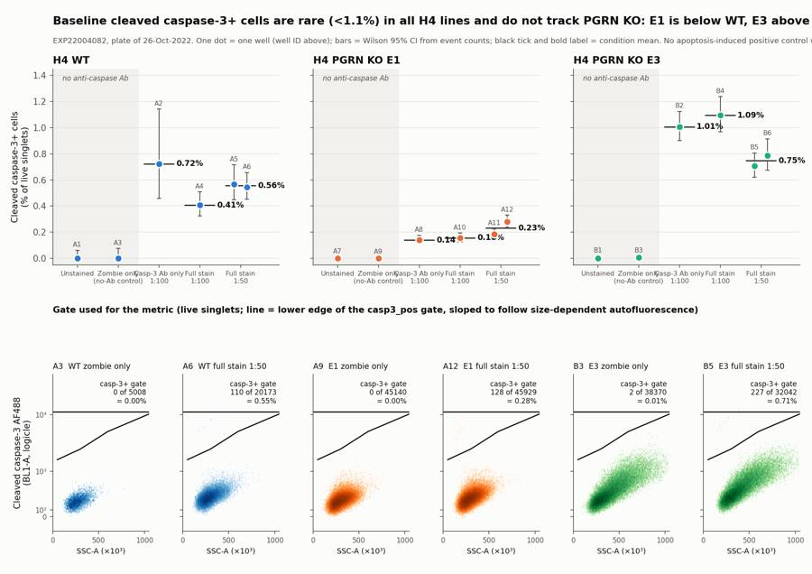
74
tool call · Bash
python3 -I - <<'EOF'
import re
s=open('outputs.py').read()
s=s.replace("xl=['Unstained','Zombie only\\n(no-Ab control)','Casp-3 Ab only\\n1:100','Full stain\\n1:100','Full stain\\n1:50']",
"xl=['Un-\\nstained','Zombie\\nonly','Casp-3 Ab\\nonly\\n1:100','Full\\nstain\\n1:100','Full\\nstain\\n1:50']")
s=s.replace(""" ax.annotate(f'{m:.2f}%',(j+0.38,m),xytext=(2,0),textcoords='offset points',va='center',fontsize=9,color=INK,fontweight='bold')""",
""" ax.annotate(f'{m:.2f}%',(j,min(ws.loc[w,'ci_lo'])),xytext=(0,-5),textcoords='offset points',va='top',ha='center',fontsize=9.5,color=INK,fontweight='bold')""")
s=s.replace("ax.set_xticklabels(xl,fontsize=7.6)","ax.set_xticklabels(xl,fontsize=8.5)")
s=s.replace("height_ratios=[1.25,1],hspace=0.62","height_ratios=[1.2,1],hspace=0.58")
s=s.replace("fig.suptitle('Baseline cleaved caspase-3+ cells are rare (<1.1%) in all H4 lines and do not track PGRN KO: E1 is below WT, E3 above',x=0.065,ha='left',fontsize=13,fontweight='bold',y=0.972)",
"fig.suptitle('Cleaved caspase-3+ cells are rare (<1.1%) in untreated H4 and do not track PGRN KO: E1 is below WT, E3 above',x=0.065,ha='left',fontsize=12.5,fontweight='bold',y=0.975)")
s=s.replace("fig.text(0.065,0.925,'EXP22004082, plate of 26-Oct-2022. One dot = one well (well ID above); bars = Wilson 95% CI from event counts; black tick and bold label = condition mean. No apoptosis-induced positive control was on this plate.',fontsize=8.8,color=INK2)",
"fig.text(0.065,0.922,'EXP22004082, plate of 26-Oct-2022. One dot = one well (well ID above); bars = Wilson 95% CI from event counts; black tick and bold number = condition mean.\\nGrey band = wells without anti-caspase antibody (gate background). No apoptosis-induced positive control was run on this plate.',fontsize=8.8,color=INK2,va='center')")
s=s.replace("gsp=fig.add_gridspec(2,6,height_ratios=[1.2,1],hspace=0.58,wspace=0.35,left=0.065,right=0.985,top=0.88,bottom=0.075)",
"gsp=fig.add_gridspec(2,6,height_ratios=[1.2,1],hspace=0.58,wspace=0.35,left=0.065,right=0.985,top=0.855,bottom=0.065)")
s=s.replace("ax.text(0.45,1.36,'no anti-caspase Ab',ha='center',fontsize=8,color=INK2,style='italic')","ax.text(0.45,1.36,'no anti-caspase Ab',ha='center',fontsize=8.5,color=INK2,style='italic')")
# gate panels
old=s[s.index(" ax.hist2d(x,y,bins=[110,110]"):s.index(" n=res.get_gate_count('casp3_pos'); ")]
new=""" ax.hist2d(x,y,bins=[110,110],range=[[0,1050],[0.05,0.72]],norm=matplotlib.colors.LogNorm(vmin=1,vmax=400),cmap=matplotlib.colors.LinearSegmentedColormap.from_list('g',['#dddcd6','#3a3936']))
mp=res.get_gate_membership('casp3_pos')
ax.scatter(ev[mp,s.pnn_labels.index('SSC-A')]/1e3,lg.apply(ev[mp,s.pnn_labels.index('BL1-A')]),s=7,color=COL['WT' if k<2 else ('E1' if k<4 else 'E3')],lw=0,zorder=3)
ax.plot(V[:4,0]/1e3,V[:4,1],color=INK,lw=1.3,zorder=4)
"""
s=s.replace(old,new)
s=s.replace("fig.text(0.065,0.455,'Gate used for the metric (live singlets; line = lower edge of the casp3_pos gate, sloped to follow size-dependent autofluorescence)',fontsize=10,fontweight='bold',color=INK)",
"fig.text(0.065,0.425,'How positives were called: live singlets, grey = density, coloured dots = events in the casp3_pos gate (above the line, which follows size-dependent autofluorescence)',fontsize=9.5,fontweight='bold',color=INK)")
open('outputs.py','w').write(s)
EOF
python3 -I outputs.py >/dev/null75
tool call · Read
{
"file_path": "/task/outputs/figure.png"
}76
tool output
(Bash completed with no output)
77
tool output
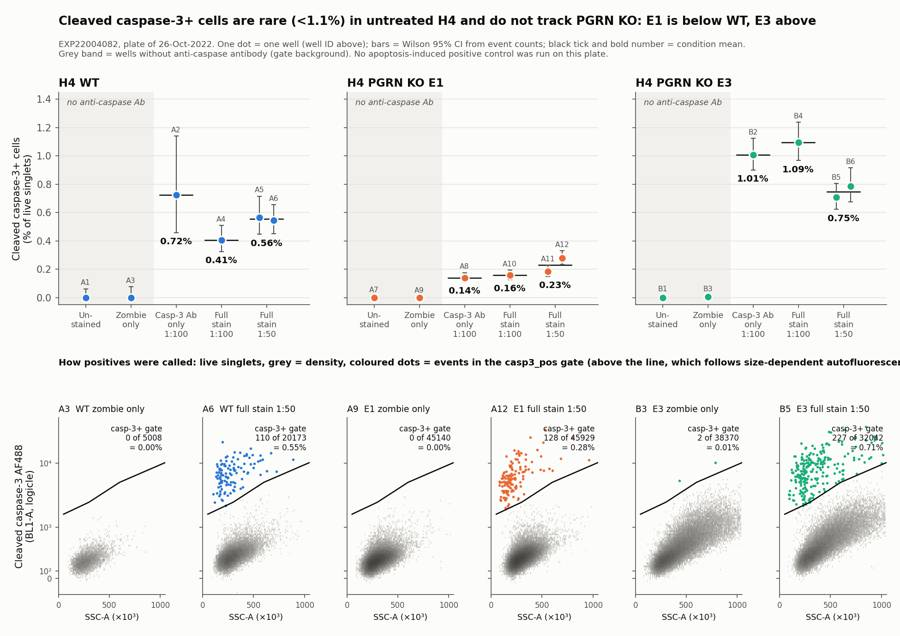
79
tool call · Bash
python3 -I - <<'EOF'
s=open('outputs.py').read()
s=s.replace(""" ax.text(0.97,0.96,f'casp-3+ gate\\n{n} of {int(m.sum())}\\n= {100*n/m.sum():.2f}%',transform=ax.transAxes,ha='right',va='top',fontsize=8,color=INK)
ax.set_title(f'{w} {lab}',fontsize=9,loc='left',color=INK)""",
""" ax.set_title(f'{w} {lab}\\n{n} of {int(m.sum())} in gate = {100*n/m.sum():.2f}%',fontsize=8.8,loc='left',color=INK)""")
s=s.replace("range=[[0,1050],[0.05,0.72]]","range=[[0,1050],[0.05,0.80]]").replace("ax.set_ylim(0.05,0.72)","ax.set_ylim(0.05,0.80)")
s=s.replace("fig.text(0.065,0.425,'How positives were called: live singlets, grey = density, coloured dots = events in the casp3_pos gate (above the line, which follows size-dependent autofluorescence)',fontsize=9.5,fontweight='bold',color=INK)",
"fig.text(0.065,0.435,'How positives were called (live singlets)',fontsize=10.5,fontweight='bold',color=INK)\nfig.text(0.065,0.413,'Grey = event density; coloured dots = events inside the casp3_pos gate; line = lower gate edge, sloped because autofluorescence rises with cell size/granularity (strongest in E3).',fontsize=8.8,color=INK2)")
open('outputs.py','w').write(s)
EOF
python3 -I outputs.py >/dev/null80
tool call · Read
{
"file_path": "/task/outputs/figure.png"
}81
tool output
(Bash completed with no output)
82
tool output
84
tool call · Bash
sed -i "s/{n} of {int(m.sum())} in gate = /{n}\/{int(m.sum())} in gate = /" outputs.py && python3 -I outputs.py >/dev/null && python3 -I - <<'EOF'
import pandas as pd, numpy as np
c=pd.read_csv('/task/outputs/counts.csv'); p=c.pivot(index='well',columns='population',values='count')
pct=100*p.casp3_pos/p.live; dead=100*p.zombie_high_dead/p.singlets
for l,w in [('WT',['A2','A4','A5','A6']),('E1',['A8','A10','A11','A12']),('E3',['B2','B4','B5','B6'])]:
print(l,'4 Ab wells mean/sd/range',pct[w].mean().round(3),pct[w].std().round(3),pct[w].min().round(3),pct[w].max().round(3),'| 3 full',pct[w[1:]].mean().round(3),pct[w[1:]].std().round(3),'| pooled events',p.casp3_pos[w].sum(),p.live[w].sum(),(100*p.casp3_pos[w].sum()/p.live[w].sum()).round(3))
for l,w in [('WT',['A3','A4','A5','A6']),('E1',['A9','A10','A11','A12']),('E3',['B3','B4','B5','B6'])]:
print(l,'dead% of singlets',dead[w].round(2).tolist(),dead[w].mean().round(2))
for w in p.index: print(w, 'cells%',(100*p.cells[w]/p.all_events[w]).round(1),'sing%',(100*p.singlets[w]/p.cells[w]).round(1),'live%',(100*p.live[w]/p.singlets[w]).round(1))
EOF85
tool output
WT 4 Ab wells mean/sd/range 0.561 0.13 0.407 0.724 | 3 full 0.506 0.087 | pooled events 274 53763 0.51 E1 4 Ab wells mean/sd/range 0.19 0.062 0.139 0.279 | 3 full 0.207 0.064 | pooled events 368 196091 0.188 E3 4 Ab wells mean/sd/range 0.899 0.181 0.708 1.094 | 3 full 0.863 0.204 | pooled events 950 106457 0.892 WT dead% of singlets [1.18, 1.16, 0.84, 1.67] 1.21 E1 dead% of singlets [2.08, 2.03, 2.02, 2.58] 2.18 E3 dead% of singlets [1.72, 1.98, 1.88, 2.14] 1.93 A1 cells% 91.4 sing% 98.0 live% 100.0 A10 cells% 96.4 sing% 97.0 live% 98.0 A11 cells% 95.8 sing% 97.2 live% 98.0 A12 cells% 94.9 sing% 97.4 live% 97.4 A2 cells% 80.6 sing% 98.0 live% 100.0 A3 cells% 89.9 sing% 98.2 live% 98.8 A4 cells% 94.8 sing% 97.2 live% 98.8 A5 cells% 96.0 sing% 97.6 live% 99.2 A6 cells% 95.8 sing% 97.6 live% 98.3 A7 cells% 95.8 sing% 97.8 live% 100.0 A8 cells% 96.7 sing% 97.1 live% 100.0 A9 cells% 96.1 sing% 97.3 live% 97.9 B1 cells% 86.8 sing% 96.3 live% 100.0 B2 cells% 87.9 sing% 96.5 live% 100.0 B3 cells% 88.2 sing% 96.1 live% 98.3 B4 cells% 88.0 sing% 96.3 live% 98.0 B5 cells% 90.1 sing% 96.4 live% 98.1 B6 cells% 89.5 sing% 96.6 live% 97.9
87
agent
Figure and tables are done; writing the report and `answer.json` now, then a final validation pass.
88
tool call · Bash
cat > write_report.py <<'EOF' import json OUT='/task/outputs/' report = r"""# EXP22004082 — H4 cleaved caspase-3 intracellular flow, plate of 26-Oct-2022 ## Question Does intracellular flow cytometry with the Cell Signaling cleaved caspase-3 (Asp175) Alexa Fluor 488 antibody (#9669) measure caspase-3 activation in H4 cells, at which antibody dilution (1:100 or 1:50), and do the PGRN KO clones (E1, E3) show more caspase-3-positive cells than WT? **Short answer: partial.** The stain works technically: it resolves a discrete cleaved caspase-3-positive population that is absent from the wells without antibody. But only 0.2–1.1% of live cells are positive in these untreated cultures, the two KO clones move in opposite directions relative to WT (E1 lower, E3 higher), and the plate has no apoptosis-induced positive control, so the assay's ability to report a real increase is untested. ## Methods **Data.** 18 FCS 3.1 files (Attune NxT), one per well, about 98 s acquisition each. Channel assignment was taken from the plan, not from the stored labels: `BL1-A` (488 nm laser, 250 V) carries the cleaved caspase-3 AF488 antibody (the stored label "AAV-GFP" is left over from an older template); `RL3-A` (640 nm laser, 350 V) carries Zombie NIR. The files' spillover matrix is the identity and the two dyes sit on different lasers, so all gates are uncompensated. **Gating (FlowKit 1.2.3, one strategy for all wells, saved in `gates.xml`).** Fluorescence axes use a logicle transform (T = 1048576, W = 0.5, M = 4.5, A = 0). | Population | Parent | Gate | Purpose | |---|---|---|---| | `cells` | all events | FSC-A 200k–1040k × SSC-A 80k–1040k | removes debris and events off-scale on scatter | | `singlets` | `cells` | FSC-A / FSC-H between 1.45 and 2.6 | removes doublets | | `live` | `singlets` | Zombie NIR (RL3-A) below a boundary that rises with FSC-A (about 65k at FSC-A 150k to about 150k at FSC-A 1050k) | removes membrane-compromised cells; sloped because Zombie background scales with cell size | | `casp3_pos` | `live` | BL1-A above a boundary that rises with SSC-A (about 1.7k at SSC-A 50k, 2.4k at 300k, 4.9k at 600k, 11k at 1100k) | cleaved caspase-3-positive cells; sloped because autofluorescence scales with size and granularity | | `zombie_high_dead` | `singlets` | region above the `live` boundary | dead-cell readout (role `other`) | The `casp3_pos` boundary was placed in the gap between the autofluorescence ridge and the positive cluster, using the six wells without antibody (unstained and Zombie-only) as background controls: they give 0, 0, 0, 0, 0 and 2 events in the gate (≤0.005% of live). **Metric.** % cleaved caspase-3-positive = `casp3_pos` / `live` × 100, per well. No normalisation; the no-antibody background is effectively zero. Condition means and SDs are across wells; per-well uncertainty is a Wilson 95% interval on the event counts. **QC.** Per well: event count, event rate over time (2 s bins), largest gap between events, drift of FSC/BL1/RL3 medians across the run, fraction of events at detector ceiling, and whether each control shows the staining pattern its label implies. ## Results **QC.** No well was excluded. Event rates were continuous in all wells (largest gap 0.03–0.8 s) and fluorescence medians were stable through each run. Every well shows the stain pattern its label implies (Zombie signal only where Zombie was added; BL1 positive cluster only where antibody was added), so there is no evidence of a mislabel. Two notes: - **A2 (WT caspase-only):** 3,149 events and 2,486 live singlets, the lowest on the plate; its estimate rests on 18 positive events (0.72%, 95% CI 0.46–1.14%). Kept with a note. WT wells in general yielded fewer cells (2.5k–20k live) than E1 (32k–54k) or E3 (21k–38k). - **B1–B6 (all E3 wells):** 4.1–5.1% of events are off-scale on FSC-A and/or SSC-A (WT/E1: 0.1–0.5%). E3 cells are larger (FSC-A median about 460k vs 375k–400k). These events are removed by the `cells` gate. Kept with a note. **Cleaved caspase-3-positive cells, % of live singlets** | Condition | WT | E1 | E3 | |---|---|---|---| | Unstained | 0.00 (A1) | 0.00 (A7) | 0.00 (B1) | | Zombie only (no antibody) | 0.00 (A3) | 0.00 (A9) | 0.005 (B3) | | Caspase antibody only, 1:100 | 0.72 (A2) | 0.14 (A8) | 1.01 (B2) | | Full stain, 1:100 (n = 1) | 0.41 (A4) | 0.16 (A10) | 1.09 (B4) | | Full stain, 1:50 (n = 2), mean ± SD | 0.56 ± 0.01 (A5, A6) | 0.23 ± 0.07 (A11, A12) | 0.75 ± 0.06 (B5, B6) | | All four antibody-stained wells, mean ± SD | 0.56 ± 0.13 | 0.19 ± 0.06 | 0.90 ± 0.18 | 1. **The antibody detects a specific population.** Antibody-stained wells contain a tight cluster of low-SSC cells with BL1-A median 4.9k–8.2k, against 280–470 for the negative cells in the same wells (roughly 13–22-fold). The cluster is absent without antibody (0–2 events in 5k–45k live cells). It sits almost entirely in the Zombie-low gate; counting positives over all singlets instead of live singlets changes no well by more than 0.02 percentage points. 2. **Baseline frequency is very low.** 0.14–1.09% of live cells in every stained well, i.e. 18–308 positive events per well. 3. **Cell line ranking is E3 > WT > E1, in all four stained wells of each line.** E1 is about 0.4× WT at both dilutions (0.23 vs 0.56% at 1:50; 0.16 vs 0.41% at 1:100). E3 is above WT, by 1.3× at 1:50 (0.75 vs 0.56%) and 2.7× at 1:100 (1.09 vs 0.41%). The ranking is unchanged when the `casp3_pos` boundary is moved by −0.03, +0.03 or +0.06 logicle units, or when a flat Zombie threshold replaces the sloped one. 4. **1:50 offers no clear gain over 1:100.** Positive-cluster brightness rises modestly (median 5.3k–5.7k at 1:100, 5.6k–8.2k at 1:50) and negative-cell background rises with it (+20 to +40 units at 1:100, +40 to +80 at 1:50, relative to the Zombie-only well). The % positive goes up in WT (0.41 → 0.56) and E1 (0.16 → 0.23) but down in E3 (1.09 → 0.75); with one well at 1:100 per line these shifts are within well-to-well spread (E1 replicates … [9,097 more characters not shown]
89
tool output
total 348 drwxr-xr-x 2 root root 4096 Nov 10 19:21 . drwxr-xr-x 5 root root 4096 Nov 10 19:13 .. -rw-r--r-- 1 root root 5163 Nov 10 19:21 answer.json -rw-r--r-- 1 root root 2223 Nov 10 19:20 condition_summary.csv -rw-r--r-- 1 root root 9781 Nov 10 19:18 counts.csv -rw-r--r-- 1 root root 295007 Nov 10 19:20 figure.png -rw-r--r-- 1 root root 3421 Nov 10 19:20 flags.csv -rw-r--r-- 1 root root 5815 Nov 10 19:18 gates.xml -rw-r--r-- 1 root root 10065 Nov 10 19:21 report.md
91
tool call · Bash
python3 -I - <<'EOF'
import flowkit as fk, numpy as np, pandas as pd, json, warnings
warnings.filterwarnings('ignore')
lg=fk.transforms.LogicleTransform(param_t=1048576,param_w=0.5,param_m=4.5,param_a=0)
gs=fk.parse_gating_xml('/task/outputs/gates.xml')
for g in ['live','casp3_pos']:
V=np.array(gs.get_gate(g).vertices); print(g, [(round(x), round(float(lg.inverse(np.array([y]))[0]))) for x,y in V])
yl=lambda x: 0.715+(x-150e3)*(0.80-0.715)/900e3
print([round(float(lg.inverse(np.array([yl(x)]))[0])) for x in [150e3,400e3,1050e3]])
# validation
O='/task/outputs/'
c=pd.read_csv(O+'counts.csv',keep_default_na=False); lay=pd.read_csv('/task/inputs/plate_layout.csv')
assert list(c.columns)==['file','well','population','role','parent','count','pct_of_parent']
assert set(c.file)==set(lay.file) and len(c)==18*6
print(c.groupby('population').role.unique().to_dict())
gates=[g[0] for g in gs.get_gate_ids()]; print(gates)
ok=True
for f,sub in c.groupby('file'):
s=fk.Sample('/task/inputs/raw/'+f); r=gs.gate_sample(s)
for _,row in sub.iterrows():
if row.population=='all_events': ok&=(row['count']==s.event_count and row.pct_of_parent=='' and row.parent=='none'); continue
ok&=(int(r.get_gate_count(row.population))==row['count'])
par=sub[sub.population==row.parent]['count'].iloc[0]; ok&=abs(float(row.pct_of_parent)-100*row['count']/par)<1e-3
gid,path=[g for g in gs.get_gate_ids() if g[0]==row.population][0]
ok&=(path[-1]==('root' if row.parent=='all_events' else row.parent))
print('counts reproduce:',ok)
fl=pd.read_csv(O+'flags.csv',keep_default_na=False); print(fl[['well','issue_type','decision']].to_string()); assert list(fl.columns)==['file','well','issue_type','evidence','decision'] and len(fl)==18
cs=pd.read_csv(O+'condition_summary.csv',keep_default_na=False); assert list(cs.columns)==['condition','wells','n_wells_used','mean','sd','metric_definition','normalisation_applied']
assert all(len(w.split(';'))==n for w,n in zip(cs.wells,cs.n_wells_used))
a=json.load(open(O+'answer.json'))
for k in a['comparisons']: assert k['a'] in set(cs.condition) and k['b'] in set(cs.condition)
assert a['excluded_wells']==fl.well[fl.decision=='exclude'].tolist()
import re; print(re.findall(r'^## .*$',open(O+'report.md').read(),flags=re.M))
EOF92
tool output
live [(100000, -10481863), (1100000, -10481863), (1100000, 138990), (100000, 52487)]
casp3_pos [(50000, 1567), (300000, 2387), (600000, 4887), (1100000, 11159), (1100000, 2954504), (50000, 2954504)]
[55099, 70262, 132373]
{'all_events': array(['other'], dtype=object), 'casp3_pos': array(['marker_positive'], dtype=object), 'cells': array(['cells'], dtype=object), 'live': array(['live'], dtype=object), 'singlets': array(['singlets'], dtype=object), 'zombie_high_dead': array(['other'], dtype=object)}
['cells', 'singlets', 'live', 'casp3_pos', 'zombie_high_dead']
counts reproduce: True
well issue_type decision
0 A1 none keep
1 A2 too_few_events keep_with_note
2 A3 none keep
3 A4 none keep
4 A5 none keep
5 A6 none keep
6 A7 none keep
7 A8 none keep
8 A9 none keep
9 A10 none keep
10 A11 none keep
11 A12 none keep
12 B1 saturation keep_with_note
13 B2 saturation keep_with_note
14 B3 saturation keep_with_note
15 B4 saturation keep_with_note
16 B5 saturation keep_with_note
17 B6 saturation keep_with_note
['## Question', '## Methods', '## Results', '## Conclusion', '## Caveats', '## Recommendation']94
tool call · Bash
python3 -I - <<'EOF'
s=open('write_report.py').read()
a=[("(about 65k at FSC-A 150k to about 150k at FSC-A 1050k)","(about 55k at FSC-A 150k, 70k at 400k, 130k at 1050k)"),
("(about 1.7k at SSC-A 50k, 2.4k at 300k, 4.9k at 600k, 11k at 1100k)","(about 1.6k at SSC-A 50k, 2.4k at 300k, 4.9k at 600k, 11k at 1100k)"),
("(+20 to +40 units at 1:100, +40 to +80 at 1:50, relative to the Zombie-only well)","(median +20 to +45 units at 1:100, +35 to +75 at 1:50, relative to the Zombie-only well of the same line)")]
for x,y in a:
assert x in s; s=s.replace(x,y)
open('write_report.py','w').write(s)
EOF
python3 -I write_report.py && grep -n "55k at\|1.6k at\|+20 to +45" /task/outputs/report.md | cut -c1-16095
tool output
19:| `live` | `singlets` | Zombie NIR (RL3-A) below a boundary that rises with FSC-A (about 55k at FSC-A 150k, 70k at 400k, 130k at 1050k) | removes membrane-co 20:| `casp3_pos` | `live` | BL1-A above a boundary that rises with SSC-A (about 1.6k at SSC-A 50k, 2.4k at 300k, 4.9k at 600k, 11k at 1100k) | cleaved caspase-3 50:4. **1:50 offers no clear gain over 1:100.** Positive-cluster brightness rises modestly (median 5.3k–5.7k at 1:100, 5.6k–8.2k at 1:50) and negative-cell
96
tool call · Read
{
"file_path": "/task/outputs/figure.png"
}97
tool output
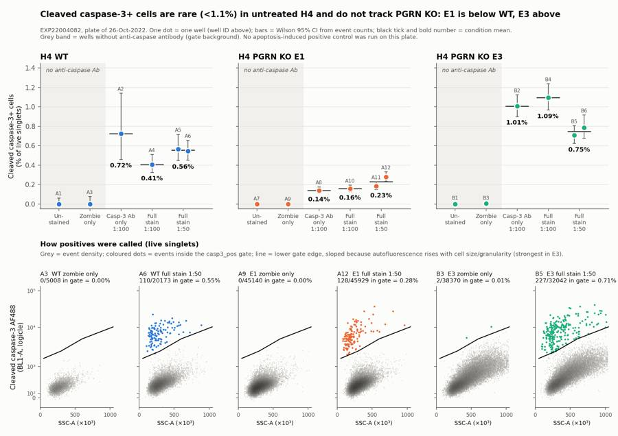
99
agent
The analysis is complete and all seven deliverables are in `/task/outputs/`; the saved gates reload with `flowkit.parse_gating_xml` and reproduce every count in `counts.csv`.
**Answer: partial.** The cleaved caspase-3 AF488 stain works technically, but this plate cannot show a PGRN KO effect.
- **Channels:** `BL1-A` is the caspase-3 AF488 antibody (the stored "AAV-GFP" label is stale) and `RL3-A` is Zombie NIR.
- **The stain is specific:** antibody-stained wells show a tight positive cluster about 13–22× brighter than the negative cells. The six no-antibody wells give 0–2 events in the gate (≤0.005% of live).
- **Baseline is very low:** 0.14–1.09% of live singlets are positive in every stained well.
- **KO clones disagree:** the ranking is E3 > WT > E1 in all four stained wells of each line, and it holds when the gate is moved.
| Full stain | WT | E1 | E3 |
|---|---|---|---|
| 1:100 (n = 1) | 0.41% | 0.16% | 1.09% |
| 1:50 (n = 2, mean) | 0.56% | 0.23% | 0.75% |
With one KO clone below WT and one above, this looks like clonal variation, not a PGRN effect.
- **Dilution:** 1:50 gives no clear gain over 1:100; the percentage rises slightly in WT and E1 and falls in E3.
**QC:** no wells are excluded. Two notes are flagged as keep-with-note:
- **A2 (WT caspase-only):** only 2,486 live singlets and 18 positive events.
- **B1–B6 (all E3):** 4.1–5.1% of events are off-scale on FSC/SSC and are not scored. E3 cells are larger and more autofluorescent, so the caspase gate is sloped against SSC to follow that.
**Recommendation:** `repeat_with_change`, assay verdict `needs_optimisation`. Add camptothecin-treated and vehicle wells for each line, because nothing on this plate shows the gate filling when apoptosis is induced. In the same repeat:
- use the antibody at 1:100 only;
- run at least three culture wells per condition;
- pool the medium and PBS wash into the harvest, since the protocol currently discards detached apoptotic cells;
- lower the FSC/SSC voltages so E3 is on scale.
The camptothecin dose and time in the report (1–10 µM, 4–24 h) are a starting range for a pilot, not a validated condition.
Files in `/task/outputs/`:
- gates.xml
- counts.csv
- flags.csv
- condition_summary.csv
- figure.png
- report.md
- answer.json
final result
The analysis is complete and all seven deliverables are in `/task/outputs/`; the saved gates reload with `flowkit.parse_gating_xml` and reproduce every count in `counts.csv`. **Answer: partial.** The cleaved caspase-3 AF488 stain works technically, but this plate cannot show a PGRN KO effect. - **Channels:** `BL1-A` is the caspase-3 AF488 antibody (the stored "AAV-GFP" label is stale) and `RL3-A` is Zombie NIR. - **The stain is specific:** antibody-stained wells show a tight positive cluster about 13–22× brighter than the negative cells. The six no-antibody wells give 0–2 events in the gate (≤0.005% of live). - **Baseline is very low:** 0.14–1.09% of live singlets are positive in every stained well. - **KO clones disagree:** the ranking is E3 > WT > E1 in all four stained wells of each line, and it holds when the gate is moved. | Full stain | WT | E1 | E3 | |---|---|---|---| | 1:100 (n = 1) | 0.41% | 0.16% | 1.09% | | 1:50 (n = 2, mean) | 0.56% | 0.23% | 0.75% | With one KO clone below WT and one above, this looks like clonal variation, not a PGRN effect. - **Dilution:** 1:50 gives no clear gain over 1:100; the percentage rises slightly in WT and E1 and falls in E3. **QC:** no wells are excluded. Two notes are flagged as keep-with-note: - **A2 (WT caspase-only):** only 2,486 live singlets and 18 positive events. - **B1–B6 (all E3):** 4.1–5.1% of events are off-scale on FSC/SSC and are not scored. E3 cells are larger and more autofluorescent, so the caspase gate is sloped against SSC to follow that. **Recommendation:** `repeat_with_change`, assay verdict `needs_optimisation`. Add camptothecin-treated and vehicle wells for each line, because nothing on this plate shows the gate filling when apoptosis is induced. In the same repeat: - use the antibody at 1:100 only; - run at least three culture wells per condition; - pool the medium and PBS wash into the harvest, since the protocol currently discards detached apoptotic cells; - lower the FSC/SSC voltages so E3 is on scale. The camptothecin dose and time in the report (1–10 µM, 4–24 h) are a starting range for a pilot, not a validated condition. Files in `/task/outputs/`: - gates.xml - counts.csv - flags.csv - condition_summary.csv - figure.png - report.md - answer.json